ثقوب سوداء متوسطة الكتلة من اندماجات نجمية في عناقيد نجمية فتية
الملخص
تسد الثقوب السوداء متوسطة الكتلة (IMBHs) في مجال الكتلة
الفجوة بين الثقوب السوداء (BHs) النجمية والثقوب السوداء فائقة الكتلة.
هنا نبحث إمكانية تكوّن IMBHs في العناقيد النجمية الفتية عبر التصادمات الانفلاتية واندماجات BH. نحلل محاكاة لعناقيد نجمية فتية وكثيفة، تتضمن نماذج حديثة للرياح النجمية ووصفات لانهيار اللب وعدم استقرار الأزواج (النبضي). في محاكياتنا لا يتكوّن عبر اندماجات BH ثنائية سوى 9 من IMBHs من أصل 218، بكتلة M⊙. تتثبط هذه القناة بشدة بسبب سرعة الهروب المنخفضة لعناقيدنا النجمية. وفي المقابل، تتكوّن بكفاءة IMBHs ذات كتل تصل إلى M⊙ عبر التصادمات النجمية الانفلاتية، ولا سيما عند الفلزية المنخفضة. وتصل نسبة IMBHs إلى % من جميع BHs المحاكاة، تبعا لفلزية السلف. تتثبط قناة التكوّن الانفلاتي بقوة في العناقيد النجمية الغنية بالمعادن ( )، بسبب الرياح النجمية. إن IMBHs فعالة للغاية في الاقتران مع BHs أخرى: إذ يكون
)، بسبب الرياح النجمية. إن IMBHs فعالة للغاية في الاقتران مع BHs أخرى: إذ يكون  % منها أعضاء في BH ثنائية عند نهاية المحاكيات. ومع ذلك، لا نجد أي اندماج بين IMBH وBH. والعناقيد النجمية الأعلى كتلة أكثر كفاءة في تكوين IMBHs: إذ يستضيف
% منها أعضاء في BH ثنائية عند نهاية المحاكيات. ومع ذلك، لا نجد أي اندماج بين IMBH وBH. والعناقيد النجمية الأعلى كتلة أكثر كفاءة في تكوين IMBHs: إذ يستضيف  % (
% ( %) من العناقيد المحاكاة ذات الكتلة الابتدائية M⊙ ( M⊙) ثقبا أسود متوسط الكتلة واحدا على الأقل.
%) من العناقيد المحاكاة ذات الكتلة الابتدائية M⊙ ( M⊙) ثقبا أسود متوسط الكتلة واحدا على الأقل.
keywords:
فيزياء الثقوب السوداء – موجات الجاذبية – الطرق: عددية – المجرات: العناقيد النجمية: عام – النجوم: الحركيات والديناميكيات – الثنائيات: عام1 مقدمة
تسد الثقوب السوداء متوسطة الكتلة (IMBHs)، ذات الكتلة في المجال  M⊙، الفجوة بين الثقوب السوداء (BHs) ذات الأحجام النجمية والثقوب السوداء فائقة الكتلة. قد تكون IMBHs لبنات بناء للثقوب السوداء فائقة الكتلة في الكون المبكر (Madau and Rees, 2001)، كما يوحي اكتشاف الكوازارات عند انزياحات حمراء عالية تصل إلى (مثلا Fan et al., 2001). نفتقر حاليا إلى دليل قاطع على وجود IMBH من الرصد الكهرومغناطيسي، غير أن عددا من المرشحات المحتملة قد اقتُرح في العقود الأخيرة. زُعم أن عدة عناقيد كروية، منها 47 Tucanae (Kızıltan et al., 2017) وG1 (Gebhardt et al., 2005)، تستضيف IMBHs، استنادا إلى أدلة ديناميكية غير مباشرة (Gerssen et al., 2002; Gebhardt et al., 2002; Anderson and van der Marel, 2010; van der Marel and Anderson, 2010; Lützgendorf et al., 2011, 2013; Miller-Jones et al., 2012; Nyland et al., 2012; Strader et al., 2012; Lanzoni et al., 2013; Baumgardt, 2017; Perera et al., 2017; Lin et al., 2018; Tremou et al., 2018; Baumgardt et al., 2019; Zocchi et al., 2019; Mann et al., 2019). وربما يكون مصدر الأشعة السينية فائق اللمعان HLX-1 في المجرة ESO 243-49 (Farrell et al., 2009; Godet et al., 2014) أقوى مرشح IMBH بين مصادر الأشعة السينية فائقة اللمعان (مثلا، Kaaret et al., 2001; Matsumoto et al., 2001; Strohmayer and Mushotzky, 2003; van der Marel, 2004; Miller and Colbert, 2004; Swartz et al., 2004; Mapelli et al., 2010; Feng and Soria, 2011; Sutton et al., 2012; Mezcua et al., 2015; Kaaret et al., 2017; Lin et al., 2020). وأخيرا، قد تكمن عدة BHs بكتلة M⊙ في نوى المجرات القزمة (Filippenko and Sargent, 1989; Filippenko and Ho, 2003; Barth et al., 2004; Greene and Ho, 2004, 2007; Seth et al., 2010; Dong et al., 2012; Kormendy and Ho, 2013; Baldassare et al., 2015; Reines and Volonteri, 2015; Mezcua et al., 2016, 2018; Reines et al., 2020). ونحيل إلى Mezcua (2017) وGreene et al. (2020) لمراجعتين حديثتين.
M⊙، الفجوة بين الثقوب السوداء (BHs) ذات الأحجام النجمية والثقوب السوداء فائقة الكتلة. قد تكون IMBHs لبنات بناء للثقوب السوداء فائقة الكتلة في الكون المبكر (Madau and Rees, 2001)، كما يوحي اكتشاف الكوازارات عند انزياحات حمراء عالية تصل إلى (مثلا Fan et al., 2001). نفتقر حاليا إلى دليل قاطع على وجود IMBH من الرصد الكهرومغناطيسي، غير أن عددا من المرشحات المحتملة قد اقتُرح في العقود الأخيرة. زُعم أن عدة عناقيد كروية، منها 47 Tucanae (Kızıltan et al., 2017) وG1 (Gebhardt et al., 2005)، تستضيف IMBHs، استنادا إلى أدلة ديناميكية غير مباشرة (Gerssen et al., 2002; Gebhardt et al., 2002; Anderson and van der Marel, 2010; van der Marel and Anderson, 2010; Lützgendorf et al., 2011, 2013; Miller-Jones et al., 2012; Nyland et al., 2012; Strader et al., 2012; Lanzoni et al., 2013; Baumgardt, 2017; Perera et al., 2017; Lin et al., 2018; Tremou et al., 2018; Baumgardt et al., 2019; Zocchi et al., 2019; Mann et al., 2019). وربما يكون مصدر الأشعة السينية فائق اللمعان HLX-1 في المجرة ESO 243-49 (Farrell et al., 2009; Godet et al., 2014) أقوى مرشح IMBH بين مصادر الأشعة السينية فائقة اللمعان (مثلا، Kaaret et al., 2001; Matsumoto et al., 2001; Strohmayer and Mushotzky, 2003; van der Marel, 2004; Miller and Colbert, 2004; Swartz et al., 2004; Mapelli et al., 2010; Feng and Soria, 2011; Sutton et al., 2012; Mezcua et al., 2015; Kaaret et al., 2017; Lin et al., 2020). وأخيرا، قد تكمن عدة BHs بكتلة M⊙ في نوى المجرات القزمة (Filippenko and Sargent, 1989; Filippenko and Ho, 2003; Barth et al., 2004; Greene and Ho, 2004, 2007; Seth et al., 2010; Dong et al., 2012; Kormendy and Ho, 2013; Baldassare et al., 2015; Reines and Volonteri, 2015; Mezcua et al., 2016, 2018; Reines et al., 2020). ونحيل إلى Mezcua (2017) وGreene et al. (2020) لمراجعتين حديثتين.
قدّم حدث موجة الجاذبية GW190521 (Abbott et al., 2020b, a)، المرتبط باندماج BH ثنائية (BBH) ذات كتلة كلية قدرها  M⊙، دليلا قويا حديثا على IMBHs ومهّد الطريق لمزيد من الرصد بواسطة كواشف موجات الجاذبية الحالية (Aasi et al., 2015; Acernese et al., 2015) والمستقبلية (Amaro-Seoane et al., 2017; Punturo et al., 2010; Reitze et al., 2019; Kalogera et al., 2019; Maggiore et al., 2020). علاوة على ذلك، يؤكد GW190521 سيناريو التكوّن بالاندماج لـIMBHs، حيث تندمج مرارا BHs أصغر، يرجح أن تكون ذات أصل نجمي، في بيئة كثيفة، مثل عنقود نجمي (SC, Miller and Hamilton, 2002; McKernan et al., 2012; Giersz et al., 2015; Fishbach et al., 2017; Gerosa and Berti, 2017, 2019; Rodriguez et al., 2019; Antonini et al., 2019; Fragione et al., 2020; Arca Sedda et al., 2020; Mapelli et al., 2020a, 2021; Tagawa et al., 2021a, b). وتشمل سيناريوهات التكوّن الأخرى الممكنة انهيار نجوم فقيرة بالمعادن وفائقة الكتلة ( M⊙) (Bond et al., 1984; Madau and Rees, 2001; Heger and Woosley, 2002; Schneider et al., 2002; Spera and Mapelli, 2017; Tanikawa et al., 2021)، وIMBHs بدائية ناتجة من عدم الاستقرارات الجاذبية في الكون المبكر (Kawaguchi et al., 2008; Carr et al., 2016; Raccanelli et al., 2016; Sasaki et al., 2016; Scelfo et al., 2018; Clesse and Garcia-Bellido, 2020; De Luca et al., 2021)، والتصادمات الانفلاتية للنجوم في SCs (Colgate, 1967; Sanders, 1970; Portegies Zwart and McMillan, 2002; Portegies Zwart et al., 2004; Gürkan et al., 2004; Freitag et al., 2006b; Giersz et al., 2015; Mapelli, 2016; Di Carlo et al., 2019; Kremer et al., 2020; Chon and Omukai, 2020; Rizzuto et al., 2021; Das et al., 2021).
M⊙، دليلا قويا حديثا على IMBHs ومهّد الطريق لمزيد من الرصد بواسطة كواشف موجات الجاذبية الحالية (Aasi et al., 2015; Acernese et al., 2015) والمستقبلية (Amaro-Seoane et al., 2017; Punturo et al., 2010; Reitze et al., 2019; Kalogera et al., 2019; Maggiore et al., 2020). علاوة على ذلك، يؤكد GW190521 سيناريو التكوّن بالاندماج لـIMBHs، حيث تندمج مرارا BHs أصغر، يرجح أن تكون ذات أصل نجمي، في بيئة كثيفة، مثل عنقود نجمي (SC, Miller and Hamilton, 2002; McKernan et al., 2012; Giersz et al., 2015; Fishbach et al., 2017; Gerosa and Berti, 2017, 2019; Rodriguez et al., 2019; Antonini et al., 2019; Fragione et al., 2020; Arca Sedda et al., 2020; Mapelli et al., 2020a, 2021; Tagawa et al., 2021a, b). وتشمل سيناريوهات التكوّن الأخرى الممكنة انهيار نجوم فقيرة بالمعادن وفائقة الكتلة ( M⊙) (Bond et al., 1984; Madau and Rees, 2001; Heger and Woosley, 2002; Schneider et al., 2002; Spera and Mapelli, 2017; Tanikawa et al., 2021)، وIMBHs بدائية ناتجة من عدم الاستقرارات الجاذبية في الكون المبكر (Kawaguchi et al., 2008; Carr et al., 2016; Raccanelli et al., 2016; Sasaki et al., 2016; Scelfo et al., 2018; Clesse and Garcia-Bellido, 2020; De Luca et al., 2021)، والتصادمات الانفلاتية للنجوم في SCs (Colgate, 1967; Sanders, 1970; Portegies Zwart and McMillan, 2002; Portegies Zwart et al., 2004; Gürkan et al., 2004; Freitag et al., 2006b; Giersz et al., 2015; Mapelli, 2016; Di Carlo et al., 2019; Kremer et al., 2020; Chon and Omukai, 2020; Rizzuto et al., 2021; Das et al., 2021).
قد تعمل قنوات تكوّن مختلفة في بيئات مختلفة (Volonteri, 2010)، حيث تمثل SCs موضعا مثاليا لكل من الاندماجات المتكررة لـBHs ذات الكتل النجمية (مثلا، Miller and Hamilton, 2002) ولتكوّن نجوم فائقة الكتلة عبر التصادمات الانفلاتية في المراحل المبكرة من تطور العنقود (مثلا، Fujii and Portegies Zwart, 2013). يتوقع أن تؤدي الديناميكيات الداخلية لـSCs دورا رئيسيا في تعديل كفاءة سيناريو اندماج BBH، إذ يرتبط انهيار اللب ارتباطا وثيقا بازدياد التفاعلات الديناميكية (Spitzer, 1987; Goodman and Hut, 1989) وبالتصليد الديناميكي للأنظمة الثنائية (Sugimoto and Bettwieser, 1983; Goodman and Hut, 1993; Trenti et al., 2007; Hurley and Shara, 2012; Beccari et al., 2019; Di Cintio et al., 2021). الميزة الرئيسية لآلية الاندماج المتكرر هي أنها تعمل طوال عمر SC بأكمله: إذ يمكن أن يتجمع IMBH وينمو ما دام SC باقيا (Giersz et al., 2015). ومع ذلك، يمكن لسلسلة اندماجات أن تنتهي فجأة إذا قُذف ناتج اندماج BBH من SC بسبب ارتداد موجات الجاذبية (Merritt et al., 2004; Madau and Quataert, 2004; Holley-Bockelmann et al., 2008). ويمكن أن يتجاوز مقدار هذه الدفعة إلى حد كبير سرعة الهروب من SC المضيف (Favata et al., 2004; Lousto and Zlochower, 2011)؛ ومن ثم فإن البناء الهرمي لـIMBH عبر اندماجات BBH المتكررة أرجح أن يحدث في SCs الأعلى كتلة، مثل SCs النووية، بسبب سرعة الهروب الكبيرة لديها (Antonini et al., 2019; Fragione et al., 2020; Mapelli et al., 2021).
أما آلية التصادم الانفلاتي، فمن جهة أخرى، فيمكن أن تكون فعالة حتى في SCs الأقل كتلة، مثل SCs الفتية. فالنجوم الأعلى كتلة في SC فتي أرجح أن تتعرض للتصادمات من النجوم الأخف، لأن الاحتكاك الديناميكي ينقلها سريعا إلى اللب (Gaburov et al., 2008). إن الكثافة المركزية العالية لـSCs الفتية، التي تتعزز أكثر في أول Myr بسبب الانهيار الحراري الجاذبي، تفضّل التصادمات النجمية بدرجة كبيرة (Freitag et al., 2006a; Portegies Zwart et al., 2010)، مما يساعد على بناء نجوم فائقة الكتلة قد تنهار إلى IMBHs. وتكمن المسألة الرئيسية في أن النجوم فائقة الكتلة تفقد جزءا ملحوظا من كتلتها عبر الرياح النجمية (مثلا Vink et al., 2011). ولا يمكن أن يتكوّن IMBH إلا إذا احتفظ النجم بكتلة كافية، ولذلك تكون هذه الآلية أكفأ عند فلزية أدنى، حيث تكون الرياح النجمية أضعف (Mapelli, 2016). كذلك ينبغي أن تحدث كل التصادمات قبل أن تتحول النجوم الضخمة في SC إلى BHs، وهو ما يحدث خلال بضعة Myr.
على الرغم من أن SCs الفتية أقل كتلة من العناقيد الكروية وSCs النووية، فإنها تشكل الغالبية العظمى من SCs في الكون (Kroupa and Boily, 2002)، وبالتالي قد تكون مساهمتها التراكمية في إحصاءات IMBHs مهمة. في هذه الورقة ندرس ديموغرافيا IMBHs في SCs الفتية من خلال محاكيات  -جسم، متضمنة نماذج حديثة للرياح النجمية ومعالجة لعدم استقرار الأزواج (النبضي) في النجوم الضخمة وفائقة الكتلة. نقدم مجموعة كبيرة من
-جسم، متضمنة نماذج حديثة للرياح النجمية ومعالجة لعدم استقرار الأزواج (النبضي) في النجوم الضخمة وفائقة الكتلة. نقدم مجموعة كبيرة من  محاكاة مباشرة حديثة من نوع
محاكاة مباشرة حديثة من نوع  -جسم بشروط ابتدائية كسيرية (لمحاكاة تكتل مناطق تشكل النجوم، مثلا Goodwin and Whitworth, 2004) وبكسر ثنائي ابتدائي كبير ( للنجوم ذات الكتلة
-جسم بشروط ابتدائية كسيرية (لمحاكاة تكتل مناطق تشكل النجوم، مثلا Goodwin and Whitworth, 2004) وبكسر ثنائي ابتدائي كبير ( للنجوم ذات الكتلة  M⊙).
M⊙).
2 الطرائق
| Set | ref. | ||||
|---|---|---|---|---|---|
| D2019HF | 0.002 | 2000 | M12 | 2.3 | D19 |
| D2019LF | 0.002 | 2000 | M12 | 1.6 | D19 |
| D2020A | 0.02 | 1000 | M12 | 1.6 | D20 |
| 0.002 | 1000 | M12 | 1.6 | D20 | |
| 0.0002 | 1000 | M12 | 1.6 | D20 | |
| D2020B | 0.02 | 1000 | 1.5 pc | 1.6 | D20 |
| 0.002 | 1000 | 1.5 pc | 1.6 | D20 | |
| 0.0002 | 1000 | 1.5 pc | 1.6 | D20 |
العمود 1: اسم مجموعة المحاكاة؛ العمود 2: الفلزية  ؛ العمود 3: عدد الجولات المنفذة لكل مجموعة؛ العمود 4: نصف قطر نصف الكتلة
؛ العمود 3: عدد الجولات المنفذة لكل مجموعة؛ العمود 4: نصف قطر نصف الكتلة  . يشير M12 إلى أن أنصاف أقطار نصف الكتلة سُحبت وفق Marks and Kroupa (2012). العمود 5: البعد الكسيري (
. يشير M12 إلى أن أنصاف أقطار نصف الكتلة سُحبت وفق Marks and Kroupa (2012). العمود 5: البعد الكسيري ( )؛ العمود 6: مرجع كل مجموعة محاكاة. تقابل D19 وD20 Di Carlo et al. (2019) وDi Carlo et al. (2020a)، على الترتيب.
)؛ العمود 6: مرجع كل مجموعة محاكاة. تقابل D19 وD20 Di Carlo et al. (2019) وDi Carlo et al. (2020a)، على الترتيب.
أُجريت المحاكيات التي نناقشها في هذه الورقة باستخدام الرموز والمنهجية نفسيهما الموصوفين في Di Carlo et al. (2019). نستخدم رمز  -جسم ذي الجمع المباشر nbody6++gpu (Wang et al., 2015)، الذي قرناه برمز تخليق السكان mobse (Mapelli et al., 2017; Giacobbo et al., 2018). يتضمن mobse وصفات حديثة لرياح النجوم الضخمة (Giacobbo and Mapelli, 2018)، والمستعرات العظمى الناتجة من التقاط الإلكترونات (Giacobbo and Mapelli, 2019)، ومستعرات انهيار اللب (Fryer et al., 2012)، والدفعات الولادية (Giacobbo and Mapelli, 2020)، ومستعرات عدم استقرار الأزواج (النبضي) (Mapelli et al., 2020b). ويعالَج الاضمحلال المداري الناجم عن إصدار موجات الجاذبية كما وصف في Peters (1964).
إذا اندمج نجم مع BH أو مع نجم نيوتروني، يفترض mobse أن كتلة النجم كلها تُفقد من النظام ولا تُراكَم على الجسم المدمج.
-جسم ذي الجمع المباشر nbody6++gpu (Wang et al., 2015)، الذي قرناه برمز تخليق السكان mobse (Mapelli et al., 2017; Giacobbo et al., 2018). يتضمن mobse وصفات حديثة لرياح النجوم الضخمة (Giacobbo and Mapelli, 2018)، والمستعرات العظمى الناتجة من التقاط الإلكترونات (Giacobbo and Mapelli, 2019)، ومستعرات انهيار اللب (Fryer et al., 2012)، والدفعات الولادية (Giacobbo and Mapelli, 2020)، ومستعرات عدم استقرار الأزواج (النبضي) (Mapelli et al., 2020b). ويعالَج الاضمحلال المداري الناجم عن إصدار موجات الجاذبية كما وصف في Peters (1964).
إذا اندمج نجم مع BH أو مع نجم نيوتروني، يفترض mobse أن كتلة النجم كلها تُفقد من النظام ولا تُراكَم على الجسم المدمج.
في هذا العمل حللنا  محاكاة لـSCs فتية؛ 4000 منها هي المحاكيات المقدمة في Di Carlo et al. (2019)، في حين أن 6000 المتبقية هي تلك التي نوقشت في Di Carlo et al. (2020a). تلخص الشروط الابتدائية للمحاكيات في الجدول 1. إن SCs الفتية أنظمة غير متناظرة ومتكتلة. لذلك نمذجناها بشروط ابتدائية كسيرية (Küpper et al., 2011)، لمحاكاة تكتل مناطق تشكل النجوم (Goodwin and Whitworth, 2004). ويحدد مستوى الكسيرية بالمعامل
محاكاة لـSCs فتية؛ 4000 منها هي المحاكيات المقدمة في Di Carlo et al. (2019)، في حين أن 6000 المتبقية هي تلك التي نوقشت في Di Carlo et al. (2020a). تلخص الشروط الابتدائية للمحاكيات في الجدول 1. إن SCs الفتية أنظمة غير متناظرة ومتكتلة. لذلك نمذجناها بشروط ابتدائية كسيرية (Küpper et al., 2011)، لمحاكاة تكتل مناطق تشكل النجوم (Goodwin and Whitworth, 2004). ويحدد مستوى الكسيرية بالمعامل  ، حيث تعني توزيعا متجانسا للنجوم. في هذا العمل نفترض في معظم محاكياتنا (8000 جولة). كما نفحص درجة أدنى من الكسيرية () في الجولات 2000 المتبقية.
تمتد الكتلة الابتدائية الكلية
، حيث تعني توزيعا متجانسا للنجوم. في هذا العمل نفترض في معظم محاكياتنا (8000 جولة). كما نفحص درجة أدنى من الكسيرية () في الجولات 2000 المتبقية.
تمتد الكتلة الابتدائية الكلية  لكل SC من M⊙ إلى M⊙ وتُسحب من توزيع
لكل SC من M⊙ إلى M⊙ وتُسحب من توزيع  ، كما في دالة الكتلة الابتدائية لـSC الموصوفة في Lada and Lada (2003). لذلك فإن توزيع كتل SCs المحاكاة لدينا يحاكي توزيع كتل SCs في مجرات شبيهة بدرب التبانة. نختار نصف قطر نصف الكتلة الابتدائي
، كما في دالة الكتلة الابتدائية لـSC الموصوفة في Lada and Lada (2003). لذلك فإن توزيع كتل SCs المحاكاة لدينا يحاكي توزيع كتل SCs في مجرات شبيهة بدرب التبانة. نختار نصف قطر نصف الكتلة الابتدائي  وفق Marks and Kroupa (2012) في 7000 محاكاة، ونعتمد قيمة ثابتة
وفق Marks and Kroupa (2012) في 7000 محاكاة، ونعتمد قيمة ثابتة  pc للمحاكيات 3000 المتبقية. ولهذه الاختيارات المختلفة لـ أثر قوي في كثافة SCs، كما هو مبين في الشكل 1.
pc للمحاكيات 3000 المتبقية. ولهذه الاختيارات المختلفة لـ أثر قوي في كثافة SCs، كما هو مبين في الشكل 1.
ولّدنا الشروط الابتدائية باستخدام mcluster (Küpper et al., 2011). تتبع الكتل الابتدائية للنجوم دالة كتلة ابتدائية من نوع Kroupa (2001)، بكتلة دنيا 0.1 M⊙ وكتلة قصوى 150 M⊙. وضعنا كسرا ثنائيا كليا ابتدائيا قدره . وبما أن mcluster يقرن النجوم الأولية الأعلى كتلة أولا، وفق توزيع
(حيث ، Sana et al. 2012)، فإن جميع النجوم ذات الكتلة
M⊙ أعضاء في أنظمة ثنائية، في حين تقترن عشوائيا النجوم ذات الكتلة
M⊙ إلى أن يُبلغ كسر ثنائي كلي قدره
 . وتنتج هذه الإجرائية كسرا ثنائيا ابتدائيا معتمدا على الكتلة ومتسقا مع خصائص التعدد في نجوم النوع O/B (Sana et al. 2012; Moe and Di Stefano 2017). كما تُسحب الفترات المدارية والشذوذات المركزية من التوزيعات الموصوفة في Sana et al. (2012).
. وتنتج هذه الإجرائية كسرا ثنائيا ابتدائيا معتمدا على الكتلة ومتسقا مع خصائص التعدد في نجوم النوع O/B (Sana et al. 2012; Moe and Di Stefano 2017). كما تُسحب الفترات المدارية والشذوذات المركزية من التوزيعات الموصوفة في Sana et al. (2012).
نحاكي SCs بثلاث فلزيات مختلفة:  0.002 و0.02 (تقريبا 1/100، و1/10، و1 Z⊙، بافتراض من Anders and Grevesse 1989). وتُحاكى كل SC مدة 100 Myr في مجال مدي خارجي ساكن شبيه بالجوار الشمسي (Wang et al., 2016). عند 100 Myr، نستخرج BBHs التي لا تزال موجودة في محاكياتنا ونكامل تطور نصف محورها الأكبر وشذوذها المركزي بفعل إصدار موجات الجاذبية حتى زمن هابل (13.6 Gyr)، وفق Peters (1964).
0.002 و0.02 (تقريبا 1/100، و1/10، و1 Z⊙، بافتراض من Anders and Grevesse 1989). وتُحاكى كل SC مدة 100 Myr في مجال مدي خارجي ساكن شبيه بالجوار الشمسي (Wang et al., 2016). عند 100 Myr، نستخرج BBHs التي لا تزال موجودة في محاكياتنا ونكامل تطور نصف محورها الأكبر وشذوذها المركزي بفعل إصدار موجات الجاذبية حتى زمن هابل (13.6 Gyr)، وفق Peters (1964).
الفروق الرئيسية بين المحاكيات في Di Carlo et al. (2019) وDi Carlo et al. (2020a) هي كفاءة طرد الغلاف المشترك ( في Di Carlo et al. 2019 و في Di Carlo et al. 2020a)، والنموذج المختار لمستعر انهيار اللب (يعتمد النموذجان السريع والمتأخر من Fryer et al. 2012 في Di Carlo et al. 2019 وDi Carlo et al. 2020a، على الترتيب). ولا تتأثر فئة IMBHs بهذه الفروق بقوة. نقسم المحاكيات إلى أربع مجموعات مختلفة تظهر أسماؤها وخصائصها في الجدول 1. ونحيل إلى Di Carlo et al. (2019) وDi Carlo et al. (2020a) لمزيد من التفاصيل عن الرمز والمحاكيات.
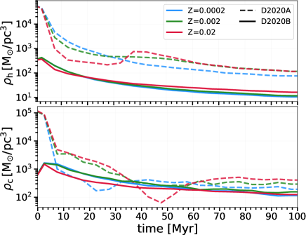
 من Marks and Kroupa 2012، خطوط متقطعة) وD2020B ( pc، خطوط صلبة) عند فلزيات مختلفة.
من Marks and Kroupa 2012، خطوط متقطعة) وD2020B ( pc، خطوط صلبة) عند فلزيات مختلفة.3 النتائج
| Set | 0 IMBHs | 1 IMBH | 2 IMBHs |
|---|---|---|---|
| All | 97.97 % | 1.97 % | 0.06 % |
| 99.85 % | 0.15 % | 0 % | |
| 97.81 % | 2.17 % | 0.02 % | |
| 96.5 % | 3.25 % | 0.25 % | |
| M | 99.01 % | 0.99 % | 0 % |
| M | 95.73 % | 4.12 % | 0.15 % |
| M | 92.13 % | 7.42 % | 0.45 % |
| D2019HF | 96.90 % | 3.05 % | 0.05 % |
| D2019LF | 98.2 % | 1.80 % | 0.0 % |
| D2020A | 98.03 % | 1.94 % | 0.03 % |
| D2020B | 98.47 % | 1.40 % | 0.13 % |
العمود 1: مجموعة المحاكاة؛ العمود 2: النسبة المئوية لـSCs التي لا تكوّن أي IMBHs؛ العمود 3: النسبة المئوية لـSCs التي تكوّن 1 IMBH؛ العمود 4: النسبة المئوية لـSCs التي تكوّن 2 IMBHs.
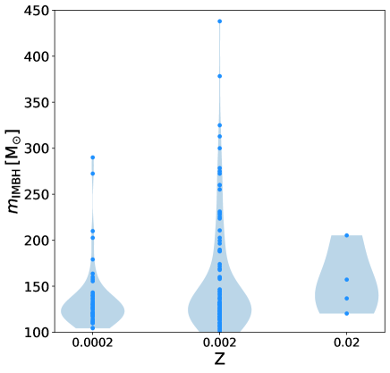
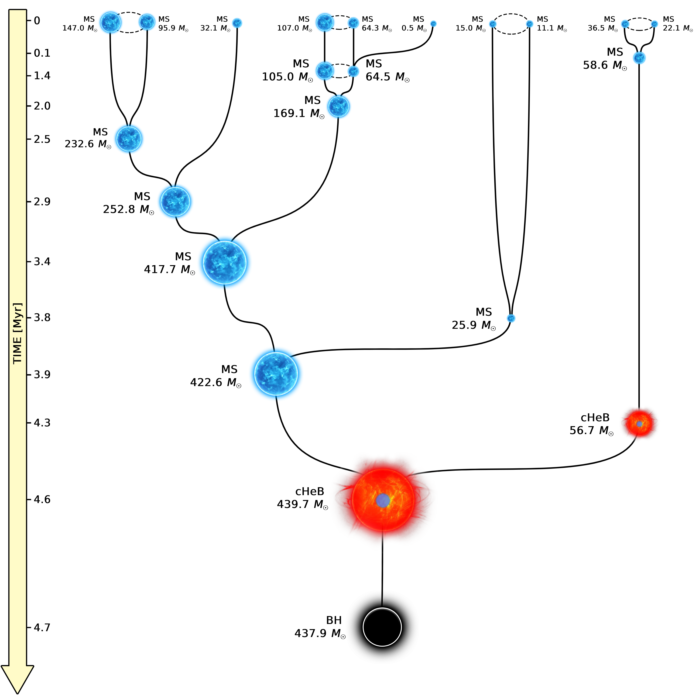
 .
.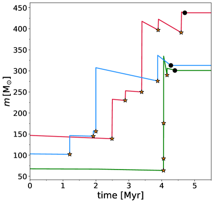
3.1 تكوّن IMBHs
نجد ما مجموعه 218 من IMBHs، لا تمثل سوى من جميع BHs المتكوّنة في محاكياتنا. إن تكوّن IMBHs حدث نادر في محاكياتنا: فكما يبين الجدول 2، لا تكوّن سوى من جميع SCs المحاكاة IMBH واحدا، ولا تكوّن سوى منها اثنين من IMBHs. تتكوّن الغالبية العظمى من IMBHs المحاكاة (209) عبر آلية التصادم الانفلاتي، في حين لا يتكوّن سوى 9 من IMBHs عبر اندماج BBH. وهذا متوقع، لأن سرعة الهروب المنخفضة ( km s-1) لـSCs المحاكاة لدينا تجعل سيناريو اندماج BBH أقل كفاءة.
يبين الشكل 2 كتل جميع IMBHs المتكوّنة لكل فلزية. تتكوّن IMBHs بكتلة تصل إلى  M⊙، لكن
M⊙، لكن  من جميع IMBHs المتكوّنة لها كتلة بين M⊙ و M⊙. وتكون IMBHs الأقل كتلة أرجح تكوّنا.
يظهر في الشكل 3 تاريخ تكوّن تخطيطي لأضخم IMBH؛ إذ يتكوّن هذا IMBH عبر تصادم انفلاتي: يشارك ما مجموعه 10 نجوما في تكوين نجم فائق الكتلة ينهار مباشرة وبسرعة ليكوّن IMBH. وتتبع جميع IMBHs الأخرى التي تتكوّن عبر التصادم الانفلاتي نمطا مماثلا، يتضمن اندماجات نجمية متعددة في أول بضعة Myr من محاكياتنا. ويظهر تطور كتلة ثلاثة نجوم تنتهي بتكوين IMBH في الشكل 4. نرى أن نمو الكتلة عبر الاندماجات النجمية يتغلب على فقد الكتلة بفعل الرياح النجمية. ويحدث تكوّن IMBHs عبر التصادم الانفلاتي دائما خلال أول Myr من بداية المحاكاة.
من جميع IMBHs المتكوّنة لها كتلة بين M⊙ و M⊙. وتكون IMBHs الأقل كتلة أرجح تكوّنا.
يظهر في الشكل 3 تاريخ تكوّن تخطيطي لأضخم IMBH؛ إذ يتكوّن هذا IMBH عبر تصادم انفلاتي: يشارك ما مجموعه 10 نجوما في تكوين نجم فائق الكتلة ينهار مباشرة وبسرعة ليكوّن IMBH. وتتبع جميع IMBHs الأخرى التي تتكوّن عبر التصادم الانفلاتي نمطا مماثلا، يتضمن اندماجات نجمية متعددة في أول بضعة Myr من محاكياتنا. ويظهر تطور كتلة ثلاثة نجوم تنتهي بتكوين IMBH في الشكل 4. نرى أن نمو الكتلة عبر الاندماجات النجمية يتغلب على فقد الكتلة بفعل الرياح النجمية. ويحدث تكوّن IMBHs عبر التصادم الانفلاتي دائما خلال أول Myr من بداية المحاكاة.
كما هو متوقع، يكون تكوّن IMBH أقل كفاءة بكثير عند فلزية أعلى لأن الرياح النجمية أقوى؛ إذ لا تتكوّن إلا أربعة IMBHs عند الفلزية الشمسية. وتبلغ نسبة IMBHs إلى العدد الكلي لـBHs لكل فلزية %، و %، و % من أجل
%، و % من أجل  ، و0.002، و0.02، على الترتيب. يبين الجدول 2 أن النسبة المئوية لـSCs المحاكاة التي تكوّن IMBH واحدا على الأقل تزداد مع انخفاض الفلزية، منتقلة من
، و0.002، و0.02، على الترتيب. يبين الجدول 2 أن النسبة المئوية لـSCs المحاكاة التي تكوّن IMBH واحدا على الأقل تزداد مع انخفاض الفلزية، منتقلة من  عند
عند  إلى عند
إلى عند  . حصلنا على عدد مطلق أكبر من IMBHs عند الفلزية
. حصلنا على عدد مطلق أكبر من IMBHs عند الفلزية  (الشكل 2)، فقط لأننا أجرينا محاكيات أكثر بثلاث مرات عند
(الشكل 2)، فقط لأننا أجرينا محاكيات أكثر بثلاث مرات عند  مقارنة بكل من أو
مقارنة بكل من أو  (الجدول 1). أجرينا عدة اختبارات إحصائية للتحقق مما إذا كانت حقيقة أن أضخم IMBHs تتكوّن عند
(الجدول 1). أجرينا عدة اختبارات إحصائية للتحقق مما إذا كانت حقيقة أن أضخم IMBHs تتكوّن عند  ذات دلالة إحصائية أم أنها مجرد أثر آخر للعدد الأكبر من المحاكيات عند هذه الفلزية. وتشير اختباراتنا إلى أن SCs ذات الفلزية المتوسطة (مع Z⊙) تميل إلى تكوين IMBHs أضخم من SCs الفقيرة بالمعادن (مع Z⊙)، حتى إن لم يوجد دليل حاسم على هذه النتيجة (انظر الملحق A للتفاصيل). ويمكن تفسير هذا الفرق المحتمل بأنه تفاعل بين فقد كتلي غير فعال نسبيا وأنصاف أقطار نجمية عظمى كبيرة (Chen et al., 2015): فعند
ذات دلالة إحصائية أم أنها مجرد أثر آخر للعدد الأكبر من المحاكيات عند هذه الفلزية. وتشير اختباراتنا إلى أن SCs ذات الفلزية المتوسطة (مع Z⊙) تميل إلى تكوين IMBHs أضخم من SCs الفقيرة بالمعادن (مع Z⊙)، حتى إن لم يوجد دليل حاسم على هذه النتيجة (انظر الملحق A للتفاصيل). ويمكن تفسير هذا الفرق المحتمل بأنه تفاعل بين فقد كتلي غير فعال نسبيا وأنصاف أقطار نجمية عظمى كبيرة (Chen et al., 2015): فعند  تظل الرياح النجمية غير فعالة نسبيا (كما في الفلزية الأقل)، لكن يمكن للنجوم الضخمة أن تطور أنصاف أقطار كبيرة جدا (في نسق العمر النهائي الرئيسي وطور العمالقة)، مما يعزز احتمال التصادم مع نجوم أخرى.
تظل الرياح النجمية غير فعالة نسبيا (كما في الفلزية الأقل)، لكن يمكن للنجوم الضخمة أن تطور أنصاف أقطار كبيرة جدا (في نسق العمر النهائي الرئيسي وطور العمالقة)، مما يعزز احتمال التصادم مع نجوم أخرى.
3.2 المسافة من مركز الكتلة
يبين الشكل 5 تطور وسيط مسافة IMBHs بالنسبة إلى مركز كتلة SCs المضيفة. ولكي تخضع نجوم أسلاف IMBHs لعدد كاف من الاندماجات النجمية، نتوقع أن تقع في أكثر المناطق المركزية كثافة في SC. نجد في محاكياتنا أن هذا ليس صحيحا تماما: فأسلاف IMBH (أي قبل ) تميل إلى الوقوع خارج نصف قطر لاغرانج  . ويرجح أن يكون هذا نتيجة للشروط الابتدائية الكسيرية، لأن تكوّن IMBH قد يحدث في تكتل بعيد عن مركز كتلة SC، قبل أن تحدث الاندماجات بين التكتلات.
بعد أن تتكوّن IMBHs، تميل إلى الهبوط سريعا نحو مركز SC والبقاء هناك حتى نهاية المحاكاة.
. ويرجح أن يكون هذا نتيجة للشروط الابتدائية الكسيرية، لأن تكوّن IMBH قد يحدث في تكتل بعيد عن مركز كتلة SC، قبل أن تحدث الاندماجات بين التكتلات.
بعد أن تتكوّن IMBHs، تميل إلى الهبوط سريعا نحو مركز SC والبقاء هناك حتى نهاية المحاكاة.
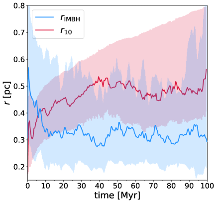
 ، في حين أن الخط الأحمر هو وسيط أنصاف أقطار لاغرانج
، في حين أن الخط الأحمر هو وسيط أنصاف أقطار لاغرانج  % () لـSCs المضيفة. وتمثل المناطق المظللة فواصل الثقة بين المئين 25− والمئين 75. لا يظهر في هذا الشكل إلا IMBHs التي لا تهرب من SCs المضيفة لها. وقد استُخدم متوسط متحرك بسيط عبر 5 خطوات زمنية لترشيح التقلبات الإحصائية.
% () لـSCs المضيفة. وتمثل المناطق المظللة فواصل الثقة بين المئين 25− والمئين 75. لا يظهر في هذا الشكل إلا IMBHs التي لا تهرب من SCs المضيفة لها. وقد استُخدم متوسط متحرك بسيط عبر 5 خطوات زمنية لترشيح التقلبات الإحصائية.3.3 IMBHs الهاربة
لا يبين الشكل 5 إلا IMBHs التي لا تهرب من SC المضيف لها. في محاكياتنا، تهرب الجسيمات من SC عندما تصبح مسافتها من مركز الكتلة أكبر من ضعف نصف القطر المدي. نجد أن من جميع IMBHs المتكوّنة تُقذف أو تتبخر من SC في أول 100 Myr. وتبلغ النسبة المئوية لـIMBHs ذات الكتلة M⊙التي تهرب من SC المضيف لها ، ولا تبلغ سوى لـIMBHs مع M⊙. وهذا يعني أن IMBHs الأعلى كتلة أرجح أن تُحتجز داخل SC المضيف لها.
يبين الشكل 6 توزيع أزمنة الهروب  لـIMBHs المقذوفة. تميل جميع IMBHs، ولا سيما الأقل كتلة، إلى القذف خلال أول Myr، مع قمة قوية بين
لـIMBHs المقذوفة. تميل جميع IMBHs، ولا سيما الأقل كتلة، إلى القذف خلال أول Myr، مع قمة قوية بين  و Myr. وتميل IMBHs الأعلى كتلة إلى الهروب في أزمنة لاحقة مقارنة بالأقل كتلة. يميز الشكل 7 بين IMBHs التي تكوّنت في SCs ذات كتلة ابتدائية أصغر من
و Myr. وتميل IMBHs الأعلى كتلة إلى الهروب في أزمنة لاحقة مقارنة بالأقل كتلة. يميز الشكل 7 بين IMBHs التي تكوّنت في SCs ذات كتلة ابتدائية أصغر من  M⊙وأكبر منها. يبلغ كلا التوزيعين ذروته حول
M⊙وأكبر منها. يبلغ كلا التوزيعين ذروته حول  Myr، لكن جميع IMBHs المقذوفة التي تتكوّن في SCs الأقل كتلة تهرب خلال أول Myr، في حين قد تهرب IMBHs المولودة في SCs أعلى كتلة في أزمنة لاحقة.
Myr، لكن جميع IMBHs المقذوفة التي تتكوّن في SCs الأقل كتلة تهرب خلال أول Myr، في حين قد تهرب IMBHs المولودة في SCs أعلى كتلة في أزمنة لاحقة.
نجد أن النسب المئوية لـIMBHs الهاربة التي تتكوّن في SCs ذات كتلة ابتدائية M⊙ و M⊙ هي و، على الترتيب. وهذا يعني أن IMBHs أرجح أن تُقذف من SCs الأعلى كتلة. قد يبدو ذلك مفاجئا، لأننا نتوقع أن تحتفظ SCs الأعلى كتلة بعدد أكبر من IMBHs بسبب سرعات الهروب الأكبر لديها. غير أن SCs الضخمة لها ألباب أكثف حيث تكون التفاعلات الديناميكية التي قد تقذف IMBHs أكثر تواترا.
M⊙ هي و، على الترتيب. وهذا يعني أن IMBHs أرجح أن تُقذف من SCs الأعلى كتلة. قد يبدو ذلك مفاجئا، لأننا نتوقع أن تحتفظ SCs الأعلى كتلة بعدد أكبر من IMBHs بسبب سرعات الهروب الأكبر لديها. غير أن SCs الضخمة لها ألباب أكثف حيث تكون التفاعلات الديناميكية التي قد تقذف IMBHs أكثر تواترا.
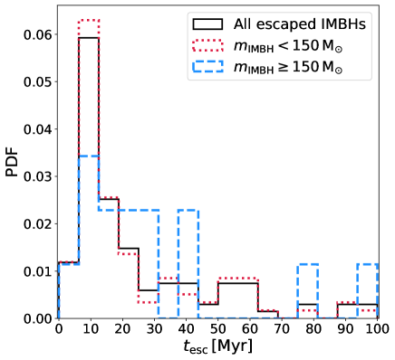
 لـIMBHs. تظهر جميع IMBHs المقذوفة بالخط الأسود الصلب. وتظهر IMBHs ذات الكتلة
لـIMBHs. تظهر جميع IMBHs المقذوفة بالخط الأسود الصلب. وتظهر IMBHs ذات الكتلة  M⊙ بالخط الأحمر المنقط، في حين تظهر IMBHs ذات الكتلة
M⊙ بالخط الأحمر المنقط، في حين تظهر IMBHs ذات الكتلة  M⊙ بالخط الأزرق المتقطع.
M⊙ بالخط الأزرق المتقطع.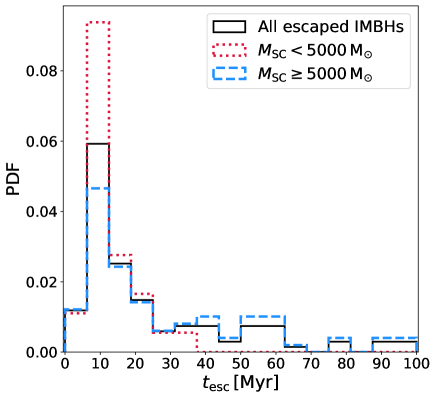
 M⊙ بالخط الأحمر المنقط، في حين تظهر IMBHs المتكوّنة في SCs ذات الكتلة M⊙ بالخط الأزرق المتقطع.
M⊙ بالخط الأحمر المنقط، في حين تظهر IMBHs المتكوّنة في SCs ذات الكتلة M⊙ بالخط الأزرق المتقطع.3.4 IMBHs في الأنظمة الثنائية
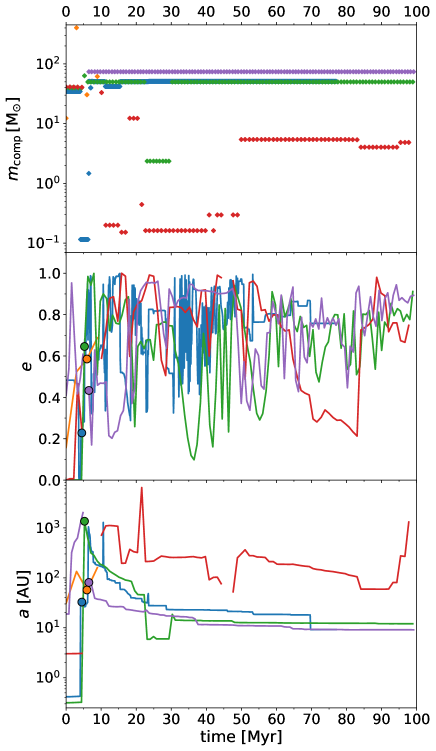
 (اللوحة العليا)، والشذوذ المركزي
(اللوحة العليا)، والشذوذ المركزي  (اللوحة الوسطى)، ونصف المحور الأكبر
(اللوحة الوسطى)، ونصف المحور الأكبر  (اللوحة السفلى) للثنائيات التي تحتوي على أضخم خمسة IMBHs متكوّنة في محاكياتنا. تمثل الدوائر الملونة الممتلئة زمن تكوّن IMBH، أي الزمن الذي يصبح فيه النجم السلف IMBH. الدائرة الحمراء مفقودة لأن سلف هذا IMBH يكون منفردا عندما ينهار إلى BH.
(اللوحة السفلى) للثنائيات التي تحتوي على أضخم خمسة IMBHs متكوّنة في محاكياتنا. تمثل الدوائر الملونة الممتلئة زمن تكوّن IMBH، أي الزمن الذي يصبح فيه النجم السلف IMBH. الدائرة الحمراء مفقودة لأن سلف هذا IMBH يكون منفردا عندما ينهار إلى BH.IMBHs هي أضخم الأجسام التي تتكوّن في محاكياتنا، ولذلك فمن المرجح أن تتفاعل مع نجوم أخرى وأن تكوّن أنظمة ثنائية (Blecha et al., 2006; MacLeod et al., 2016). في محاكياتنا تقضي IMBHs في المتوسط من الزمن جزءا من نظام ثنائي أو ثلاثي. يبين الشكل 8 تطور كتلة الرفيق ، والشذوذ المركزي المداري  ، ونصف المحور الأكبر
، ونصف المحور الأكبر  لأضخم خمسة IMBHs تتكوّن في محاكياتنا. وتقضي جميع IMBHs الضخمة الخمسة هذه تقريبا كل وقتها في أنظمة ثنائية، باستثناء واحد منها يُقذف من SC بعد
لأضخم خمسة IMBHs تتكوّن في محاكياتنا. وتقضي جميع IMBHs الضخمة الخمسة هذه تقريبا كل وقتها في أنظمة ثنائية، باستثناء واحد منها يُقذف من SC بعد  Myr.
Myr.
تخضع هذه الثنائيات لتفاعلات ديناميكية مستمرة تشوش خصائصها المدارية. يتذبذب الشذوذ المركزي بعنف ويميل إلى اتخاذ قيم بين و (الشكل 8). ويقابل كل تغير في الشذوذ المركزي تغير أصغر في نصف المحور الأكبر، الذي يميل إلى الانكماش مع الزمن. عند نهاية المحاكاة، لا يزال اثنان من IMBHs المبينة في الشكل 8 عضوين في نظام ثنائي مع BH رفيق. أعدنا محاكاة SCs المضيفة لهذين IMBHs حتى  Gyr للتحقق من اندماجات محتملة، لكن أيا من هذه الأنظمة الثنائية لا يندمج11
1
لا يتضمن nbody6++gpu معالجة للحدود ما بعد النيوتنية. ولا نستطيع استبعاد احتمال أن تسمح التفاعلات الديناميكية، مقترنة بمعالجة للحدود ما بعد النيوتنية، باندماج بعض ثنائيات IMBH–BH لدينا..
Gyr للتحقق من اندماجات محتملة، لكن أيا من هذه الأنظمة الثنائية لا يندمج11
1
لا يتضمن nbody6++gpu معالجة للحدود ما بعد النيوتنية. ولا نستطيع استبعاد احتمال أن تسمح التفاعلات الديناميكية، مقترنة بمعالجة للحدود ما بعد النيوتنية، باندماج بعض ثنائيات IMBH–BH لدينا..
تميل IMBHs المحاكاة إلى الاقتران مع أعضاء ضخمة أخرى في SC، لأن التبادلات الديناميكية تقود عموما إلى بناء ثنائيات أكبر كتلة فأكبر (Hills and Fullerton, 1980). يبين الشكل 9 توزيع الأنواع النجمية لرفقاء IMBH. وإلى جانب نجوم النسق الرئيسي، وهي النوع النجمي الأكثر شيوعا في SCs المحاكاة، نرى أن أكثر الرفقاء الثنائيين شيوعا لـIMBHs هم BHs والنجوم النيوترونية.
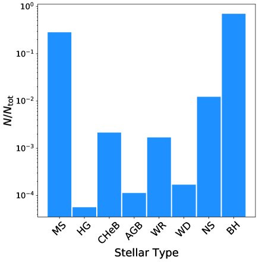
3.4.1 ثنائيات IMBH–BH
نحلل خصائص جميع BBHs التي تستضيف IMBH واحدا على الأقل في محاكياتنا (ونسميها فيما يلي ثنائيات IMBH–BH).
يتضح من الشكل 9 أن IMBHs فعالة للغاية في العثور على رفيق BH: إذ يوجد  من جميع IMBHs في BBH عند نهاية المحاكيات.
يبين الشكل 10 الكتلة الكلية للثنائيات بوصفها دالة في نسبة الكتلة
من جميع IMBHs في BBH عند نهاية المحاكيات.
يبين الشكل 10 الكتلة الكلية للثنائيات بوصفها دالة في نسبة الكتلة  (مع ) لجميع أنظمة IMBH–BH.
للثنائية ذات أصغر نسبة كتلة وكتلة ثانوية M⊙. ولأضخم ثنائية IMBH–BH كتلتان M⊙ و M⊙.
قيم نسبة الكتلة هي الأكثر احتمالا، لكننا نجد بعض الثنائيات مع
(مع ) لجميع أنظمة IMBH–BH.
للثنائية ذات أصغر نسبة كتلة وكتلة ثانوية M⊙. ولأضخم ثنائية IMBH–BH كتلتان M⊙ و M⊙.
قيم نسبة الكتلة هي الأكثر احتمالا، لكننا نجد بعض الثنائيات مع  تصل إلى . وبالإجمال، تمتلك ثنائيات IMBH–BH نسب كتل أدنى من BBHs الأخرى (انظر الشكل 5 في Di Carlo et al. 2020b، حيث نبين أن الغالبية العظمى من BBHs في SCs الفتية لها ). وهذا متوقع، لأن SCs ذات أكثر من IMBH واحد نادرة جدا، ومن ثم لا تستطيع IMBHs إلا الاقتران مع BHs أقل كتلة.
تصل إلى . وبالإجمال، تمتلك ثنائيات IMBH–BH نسب كتل أدنى من BBHs الأخرى (انظر الشكل 5 في Di Carlo et al. 2020b، حيث نبين أن الغالبية العظمى من BBHs في SCs الفتية لها ). وهذا متوقع، لأن SCs ذات أكثر من IMBH واحد نادرة جدا، ومن ثم لا تستطيع IMBHs إلا الاقتران مع BHs أقل كتلة.
لا نجد اندماجات لثنائيات IMBH–BH في محاكياتنا. وقد تزيد إضافة حدود ما بعد نيوتنية إلى محاكياتنا فرص اندماج IMBH–BH أثناء اللقاءات الرنينية (مثلا، Samsing, 2018; Zevin et al., 2019; Kremer et al., 2019). غير أن SCs لدينا صغيرة نسبيا وتتشتت بسرعة، ولذلك لا تمتلك هذه الثنائيات وقتا كافيا لتتصلد عبر التفاعلات الديناميكية. وتبدو اندماجات BBHs التي لها مكون IMBH واحد على الأقل أحداثا نادرة للغاية حتى في SCs أعلى كتلة بكثير (مثلا، Kremer et al., 2020).
نجد ثنائية واحدة فقط مكونة من IMBHين (ونسميها فيما يلي IMBH ثنائية)، بكتلتين M⊙ و M⊙. يظهر تاريخ تكوّنها في الشكل 11. أولا، يقترن ديناميكيا BHان ضخمان بكتلتي و، كانا قد تكوّنا عبر التصادم الانفلاتي، ليكوّنا BBH. ثم يشوش BH ثالث كتلته M⊙ هذه BBH، ويندمج في أثناء العملية مع BH الثانوي في الثنائية، مكونا IMBH الثنائية. ويتضمن تكوّن هذه الثنائية آليتي التصادم الانفلاتي واندماج BBH معا.
في محاكياتنا لا ندرج الدفعات النسبية. ولو أدرجت، فقد تفصل هذه IMBH الثنائية عند الولادة. لذلك حسبنا لاحقا الدفعة النسبية التي يحثها اندماج BHين مع M⊙، وفق الصيغ المقدمة في Maggiore (2018). ولحساب الدفعة، سحبنا عشوائيا مقادير لف العزم لـBHين من توزيع ماكسويلي مع ، واتجاهات لف العزم موزعة تساويا على الكرة (انظر، مثلا، Bouffanais et al. 2021 لمناقشة هذه الفرضيات). كررنا حساب الدفعة  مرة لسحوبات عشوائية مختلفة من مقادير لف العزم وميلانه. ثم حسبنا احتمال أن يظل النظام الثنائي المكوّن من بقايا الاندماج ومن BH الثالث ذي الكتلة M⊙ مرتبطا بعد الدفعة النسبية. نحسب كتلة بقايا الاندماج من Jiménez-Forteza et al. (2017)، فنحصل على M⊙.
ولتقدير الخصائص المدارية لـIMBH الثنائية ذات الكتلتين
مرة لسحوبات عشوائية مختلفة من مقادير لف العزم وميلانه. ثم حسبنا احتمال أن يظل النظام الثنائي المكوّن من بقايا الاندماج ومن BH الثالث ذي الكتلة M⊙ مرتبطا بعد الدفعة النسبية. نحسب كتلة بقايا الاندماج من Jiménez-Forteza et al. (2017)، فنحصل على M⊙.
ولتقدير الخصائص المدارية لـIMBH الثنائية ذات الكتلتين  و، نبدأ من شذوذ مركزي ونصف محور أكبر AU، وهما القيمتان اللتان يعطيهما nbody6++gpu عند زمن الاندماج بين و، ونحسب نصف المحور الأكبر والشذوذ المركزي النهائيين (بعد الدفعة النسبية) باتباع المعادلات المفصلة في الملحق A من Hurley et al. (2002). نجد أن IMBH الثنائية تبقى مرتبطة في % من تحققاتنا العشوائية. وإذا سُحبت الدفعات من توزيع ماكسويلي مع (دفعات صغيرة جدا، كما تنبأ Fuller and Ma 2019)، فإن IMBH الثنائية تبقى مرتبطة في % من التحققات العشوائية. بل إن الدفعة النسبية تفضّل اندماج IMBH الثنائية النهائية في بضعة تحققات (
و، نبدأ من شذوذ مركزي ونصف محور أكبر AU، وهما القيمتان اللتان يعطيهما nbody6++gpu عند زمن الاندماج بين و، ونحسب نصف المحور الأكبر والشذوذ المركزي النهائيين (بعد الدفعة النسبية) باتباع المعادلات المفصلة في الملحق A من Hurley et al. (2002). نجد أن IMBH الثنائية تبقى مرتبطة في % من تحققاتنا العشوائية. وإذا سُحبت الدفعات من توزيع ماكسويلي مع (دفعات صغيرة جدا، كما تنبأ Fuller and Ma 2019)، فإن IMBH الثنائية تبقى مرتبطة في % من التحققات العشوائية. بل إن الدفعة النسبية تفضّل اندماج IMBH الثنائية النهائية في بضعة تحققات ( %).
%).
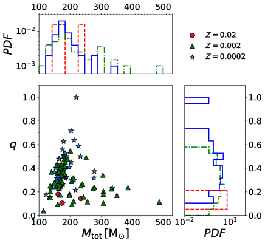
 لثنائيات IMBH–BH. تشير الدوائر والمثلثات والنجوم إلى
لثنائيات IMBH–BH. تشير الدوائر والمثلثات والنجوم إلى  ، و0.002، و0.0002، على الترتيب. وتبين المدرجات الهامشية توزيع
، و0.002، و0.0002، على الترتيب. وتبين المدرجات الهامشية توزيع  (على المحور
(على المحور  ) و (على المحور ).
تشير المدرجات الزرقاء الصلبة والخضراء ذات النقطة والشرطة والحمراء المتقطعة إلى
) و (على المحور ).
تشير المدرجات الزرقاء الصلبة والخضراء ذات النقطة والشرطة والحمراء المتقطعة إلى  0.002 و0.02، على الترتيب.
0.002 و0.02، على الترتيب.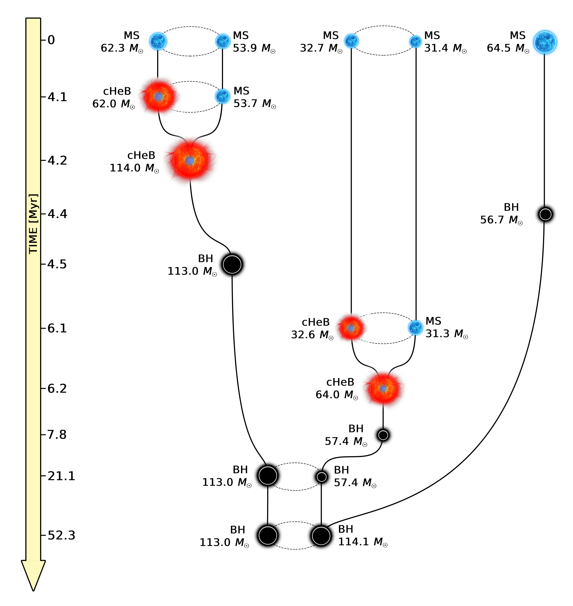
3.5 خصائص SCs المضيفة
قد يؤثر وجود IMBH في تطور SC المضيف وخصائصه (Mastrobuono-Battisti et al., 2014; Bianchini et al., 2015; Arca-Sedda, 2016; Askar et al., 2017). وقد تساعدنا معرفة البصمات المحتملة لوجود IMBH في SCs على فهم ما إذا كانت SCs المرصودة تستضيف IMBH أم لا.
3.5.1 كتلة SC
يبين الشكل 12 الكتلة الابتدائية لـSC المضيف بوصفها دالة في كتلة IMBH. تتكوّن أضخم IMBHs تفضيليا في SCs ضخمة.
من المدرج الهامشي الذي يبين توزيع ، قد يبدو أن IMBHs أكثر عددا قليلا في SCs صغيرة. غير أننا، بما أننا اعتمدنا دالة كتلة  ، فقد حاكينا عددا أكبر بكثير من SCs الصغيرة مقارنة بالضخمة. وكما يؤكد الجدول 2، تتكوّن IMBHs بكفاءة أعلى في SCs الضخمة حيث تكون التصادمات النجمية أكثر فعالية. فعلى سبيل المثال، تتكوّن IMBHs في من SCs مع ، ولا تتكوّن إلا في من SCs مع
، فقد حاكينا عددا أكبر بكثير من SCs الصغيرة مقارنة بالضخمة. وكما يؤكد الجدول 2، تتكوّن IMBHs بكفاءة أعلى في SCs الضخمة حيث تكون التصادمات النجمية أكثر فعالية. فعلى سبيل المثال، تتكوّن IMBHs في من SCs مع ، ولا تتكوّن إلا في من SCs مع  . في محاكياتنا، لا تتكوّن IMBHs عند الفلزية الشمسية إلا في SCs ذات كتلة M⊙.
. في محاكياتنا، لا تتكوّن IMBHs عند الفلزية الشمسية إلا في SCs ذات كتلة M⊙.
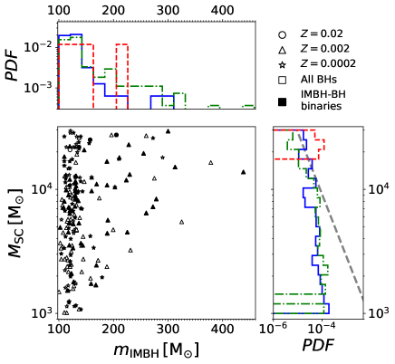
 ) مقابل كتلة IMBH (
) مقابل كتلة IMBH ( ). وتبين المدرجات الهامشية توزيع
). وتبين المدرجات الهامشية توزيع  (المحور
(المحور  ) و (المحور
) و (المحور  ). تشير الرموز السوداء الممتلئة إلى IMBHs في ثنائيات IMBH–BH، في حين تمثل الرموز المفتوحة BHs منفردة.
وتشير المدرجات الزرقاء الصلبة والخضراء ذات النقطة والشرطة والحمراء المتقطعة إلى 0.002 و0.02، على الترتيب. ويبين الخط الرمادي المتقطع دالة الكتلة الابتدائية لـSCs ().
). تشير الرموز السوداء الممتلئة إلى IMBHs في ثنائيات IMBH–BH، في حين تمثل الرموز المفتوحة BHs منفردة.
وتشير المدرجات الزرقاء الصلبة والخضراء ذات النقطة والشرطة والحمراء المتقطعة إلى 0.002 و0.02، على الترتيب. ويبين الخط الرمادي المتقطع دالة الكتلة الابتدائية لـSCs ().3.5.2 الكسيرية ونصف قطر نصف الكتلة الابتدائي
في الشكل 13 نقارن توزيع كتلة IMBH لمجموعات محاكاة مختلفة. تنتج المحاكيات ذات الكسيرية المنخفضة (D2019LF) IMBHs أضخم من المحاكيات ذات الكسيرية العالية (D2019HF). غير أننا نرى من الجدول 2 أن مجموعة D2019HF أكفأ من D2019LF في إنتاج IMBHs. وهذا يعني أن الكسيرية العالية تساعد على إنتاج عدد أكبر من IMBHs، ولكن بكتل أدنى. ويحدث ذلك لأن SCs ذات الكسيرية العالية تتكون من تكتلات أصغر وأكثف (ذات مقياس زمني أقصر للاسترخاء ثنائي الجسم)، حيث تكون التصادمات النجمية أرجح حدوثا. فمن جهة، يزيد ذلك كفاءتها في تكوين IMBHs. ومن جهة أخرى، لا يستضيف التكتل الصغير نجوما ضخمة كثيرة (في SCs عالية الكسيرية لدينا، قد يستضيف التكتل الواحد حتى نجمين ضخمين على الأكثر). ومن ثم، لكي يحدث تصادم انفلاتي لنجوم ضخمة ولكي يتكوّن IMBH أعلى كتلة، لا بد أن تندمج تكتلات أكثر معا قبل موت نجومها الضخمة. وفي حالة الكسيرية العالية، تندمج التكتلات المختلفة معا على مقياس زمني مشابه لمقياس تكوّن IMBH أو أطول منه. وبينما يكون تكوين IMBH صغير في تكتل واحد أسهل، قد تكون النجوم من تكتلات أكثر لازمة لتكوين IMBH أعلى كتلة.
وعلى النقيض من ذلك، فإن SCs منخفضة الكسيرية أشبه بـSCs أحادية البنية ولها مقياس زمني أطول للاسترخاء ثنائي الجسم. وهذا يعني أن التصادمات الانفلاتية ستبدأ لاحقا، مشتملة على جميع النجوم الضخمة في SC. فمن جهة، لن تكون كتلة ناتج التصادم محدودة بكتلة التكتل، مما يسمح بتكوين IMBHs أضخم. ومن جهة أخرى، لأن التصادمات تبدأ لاحقا، فقد تموت النجوم الضخمة قبل أن تجمع نجما كافي الكتلة. وهذا يجعل SCs منخفضة الكسيرية أقل كفاءة في تكوين IMBHs.
نقارن الآن بين المجموعتين D2020A وD2020B في الشكل 13 وفي الجدول 2. تمتلك SCs في D2020A نصف قطر نصف كتلة ابتدائيا أصغر منه في D2020B، لكن لكلتيهما درجة الكسيرية نفسها ( ). وهذا يعني أن التكتلات ستمتلك تقريبا العدد نفسه من النجوم، لكن بكثافات مختلفة. وكما هو مبين في الشكل 1، تمتلك SCs في D2020A كثافة لب أكبر في أول ، عندما تحدث التصادمات الانفلاتية. وبسبب هذه الكثافة الابتدائية الأعلى، تكون المجموعة D2020A أكفأ في تكوين IMBHs، لكن توزيعات كتل IMBH قابلة للمقارنة.
). وهذا يعني أن التكتلات ستمتلك تقريبا العدد نفسه من النجوم، لكن بكثافات مختلفة. وكما هو مبين في الشكل 1، تمتلك SCs في D2020A كثافة لب أكبر في أول ، عندما تحدث التصادمات الانفلاتية. وبسبب هذه الكثافة الابتدائية الأعلى، تكون المجموعة D2020A أكفأ في تكوين IMBHs، لكن توزيعات كتل IMBH قابلة للمقارنة.
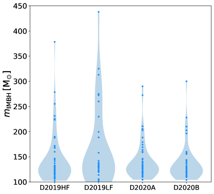
3.5.3 أنصاف أقطار SC
نتحقق مما إذا كان وجود IMBH يؤثر في تطور أنصاف أقطار لاغرانج لـSCs المحاكاة. يبين الشكل 14 تطور أنصاف أقطار لاغرانج  ، و
، و ، و
، و ، و لـSCs مع IMBHs ومن دونها. تتسع SCs ذات IMBHs بسرعة أكبر في أول بضعة Myr من SCs التي لا تحتوي على IMBHs. وتتسع أنصاف أقطار لاغرانج الأعلى أكثر، مما يعني أن التوسع أقوى في المناطق الخارجية من SC. وهذا الأثر نتيجة لديناميكيات IMBH: إذ يسخن IMBH العنقود، ناشرا النجوم إلى مدارات أقل ارتباطا وجاعلا العنقود يتمدد (Baumgardt et al., 2004c).
بعد التوسع الابتدائي، تستقر أنصاف أقطار SCs ذات IMBHs. بعد Myr، تتداخل أنصاف أقطار لاغرانج 10% (
، و لـSCs مع IMBHs ومن دونها. تتسع SCs ذات IMBHs بسرعة أكبر في أول بضعة Myr من SCs التي لا تحتوي على IMBHs. وتتسع أنصاف أقطار لاغرانج الأعلى أكثر، مما يعني أن التوسع أقوى في المناطق الخارجية من SC. وهذا الأثر نتيجة لديناميكيات IMBH: إذ يسخن IMBH العنقود، ناشرا النجوم إلى مدارات أقل ارتباطا وجاعلا العنقود يتمدد (Baumgardt et al., 2004c).
بعد التوسع الابتدائي، تستقر أنصاف أقطار SCs ذات IMBHs. بعد Myr، تتداخل أنصاف أقطار لاغرانج 10% ( ) لـSCs مع IMBH ومن دونه وتبدأ في التصرف بالطريقة نفسها. في نهاية المحاكيات، تكون قيم أنصاف أقطار لاغرانج
) لـSCs مع IMBH ومن دونه وتبدأ في التصرف بالطريقة نفسها. في نهاية المحاكيات، تكون قيم أنصاف أقطار لاغرانج  و
و لـSCs مع IMBHs ومن دونها شبه متماثلة. ولوجود IMBH أثر أقوى في أنصاف أقطار لاغرانج في المراحل الأولى من تطور SCs.
لـSCs مع IMBHs ومن دونها شبه متماثلة. ولوجود IMBH أثر أقوى في أنصاف أقطار لاغرانج في المراحل الأولى من تطور SCs.
نتحقق أيضا من سلوك أنصاف أقطار لاغرانج المحسوبة مع استبعاد النجوم النيوترونية وBHs. وبهذه الطريقة نستبعد المكوّن المظلم ونحصل على أنصاف أقطار أشبه بما يمكن أن تخبرنا به الرصود، حتى إن كنا لا نأخذ في الحسبان أي تحيز رصدي آخر (فعلى سبيل المثال لا نزيل النجوم ذات الكتلة الأصغر). وفيما يلي نسمي هذه النسخة من أنصاف أقطار لاغرانج أنصاف أقطار لاغرانج المرئية. يبين الشكل 15 الفروق بين أنصاف أقطار لاغرانج 10% و50% وأنصاف أقطار لاغرانج 10% و50% المرئية. تكون أنصاف أقطار لاغرانج المرئية أكبر قليلا من أنصاف أقطار لاغرانج، ويرجح أن ذلك بسبب الفصل الكتلي، لكن الفرق لا يؤثر في نتيجتنا الرئيسية: تميل SCs ذات IMBHs إلى التوسع أكثر من SCs التي لا تحتوي على IMBHs. وتتسق هذه النتيجة مع نتائج دراسات سابقة (مثلا Baumgardt et al., 2004a, c, b; Trenti et al., 2007, 2010)، التي تجد أن وجود IMBH في SC يؤدي إلى توسع ابتدائي أقوى.
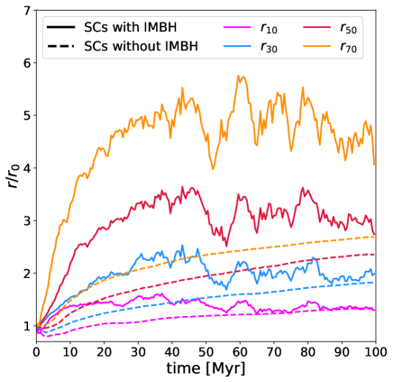
 ، و، و، و). تشير الخطوط الصلبة إلى SCs التي تحتوي على IMBH واحد على الأقل؛ وتشير الخطوط المتقطعة إلى SCs التي لا تحتوي على IMBHs. طُبع كل نصف قطر إلى قيمته الابتدائية
، و، و، و). تشير الخطوط الصلبة إلى SCs التي تحتوي على IMBH واحد على الأقل؛ وتشير الخطوط المتقطعة إلى SCs التي لا تحتوي على IMBHs. طُبع كل نصف قطر إلى قيمته الابتدائية  . وقد استُخدم متوسط متحرك بسيط على 5 خطوات زمنية لترشيح التقلبات الإحصائية.
. وقد استُخدم متوسط متحرك بسيط على 5 خطوات زمنية لترشيح التقلبات الإحصائية.
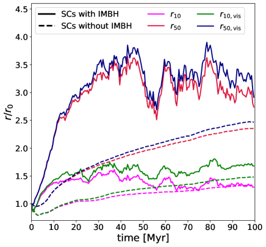
 و
و ) ولأنصاف أقطار لاغرانج المرئية المقابلة و (أي أنصاف أقطار لاغرانج 10% و50% المحسوبة مع استبعاد BHs والنجوم النيوترونية). تشير الخطوط الصلبة إلى SCs التي تحتوي على IMBH واحد على الأقل؛ وتشير الخطوط المتقطعة إلى SCs من دون IMBHs. طُبع كل نصف قطر إلى قيمته الابتدائية
) ولأنصاف أقطار لاغرانج المرئية المقابلة و (أي أنصاف أقطار لاغرانج 10% و50% المحسوبة مع استبعاد BHs والنجوم النيوترونية). تشير الخطوط الصلبة إلى SCs التي تحتوي على IMBH واحد على الأقل؛ وتشير الخطوط المتقطعة إلى SCs من دون IMBHs. طُبع كل نصف قطر إلى قيمته الابتدائية  . وقد استُخدم متوسط متحرك بسيط على 5 خطوات زمنية لترشيح التقلبات الإحصائية.
. وقد استُخدم متوسط متحرك بسيط على 5 خطوات زمنية لترشيح التقلبات الإحصائية.
4 الاستنتاجات
لـIMBHs كتل في المجال M⊙ وهي تسد الفجوة بين BHs ذات الأحجام النجمية والثقوب السوداء فائقة الكتلة. نفتقر حاليا إلى دليل قاطع على وجود IMBH من الرصد الكهرومغناطيسي، لكننا نعرف عدة مرشحات قوية (مثلا، Farrell et al., 2009; Godet et al., 2014; Reines and Volonteri, 2015; Kızıltan et al., 2017; Abbott et al., 2020b, a). هنا بحثنا تكوّن IMBHs في SCs فتية عبر اندماجات BBH وآلية التصادم الانفلاتي.
في محاكياتنا، تتكوّن 209 من IMBHs عبر آلية التصادم الانفلاتي، في حين لا تتكوّن إلا 9 من IMBHs عبر اندماجات BBH. يستضيف كل SC حدا أقصى قدره اثنان من IMBHs. نجد IMBHs بكتلة تصل إلى  M⊙، لكن من جميع IMBHs المحاكاة لها كتلة بين
M⊙، لكن من جميع IMBHs المحاكاة لها كتلة بين  M⊙ و
M⊙ و M⊙: فـIMBHs الأقل كتلة أرجح تكوّنا من الأعلى كتلة.
M⊙: فـIMBHs الأقل كتلة أرجح تكوّنا من الأعلى كتلة.
كما هو متوقع، يكون تكوّن IMBH أقل كفاءة بكثير عند الفلزية العالية، لأن الرياح النجمية أكثر فعالية: إذ لا تتكوّن إلا أربعة IMBHs عند الفلزية الشمسية. وتزداد النسبة المئوية لـSCs المحاكاة التي تكوّن IMBH واحدا على الأقل مع انخفاض الفلزية، منتقلة من عند  إلى
إلى  عند
عند  .
.
تتكوّن IMBHs بكفاءة أعلى في SCs الضخمة، حيث تكون الديناميكيات أهم. فعلى سبيل المثال، تتكوّن IMBHs في  من SCs مع
من SCs مع  ، وفي فقط من SCs مع .
، وفي فقط من SCs مع .
في محاكياتنا يُقذف من جميع IMBHs من SC الأم، تفضيليا في أول  Myr من بداية المحاكيات. أما IMBHs التي تبقى داخل العنقود فتهبط سريعا نحو المركز بعد تكوّنها وتبقى هناك حتى نهاية المحاكاة. وتكون IMBHs أرجح قذفا إذا كانت كتلتها منخفضة ( M⊙) وإذا كانت كتلة SC المضيف لها كبيرة ( M⊙).
Myr من بداية المحاكيات. أما IMBHs التي تبقى داخل العنقود فتهبط سريعا نحو المركز بعد تكوّنها وتبقى هناك حتى نهاية المحاكاة. وتكون IMBHs أرجح قذفا إذا كانت كتلتها منخفضة ( M⊙) وإذا كانت كتلة SC المضيف لها كبيرة ( M⊙).
بسبب كتلتها العالية، من المرجح أن تتفاعل IMBHs ديناميكيا مع نجوم أخرى وأن تكوّن أنظمة ثنائية. في محاكياتنا تقضي IMBHs في المتوسط  من الزمن جزءا من نظام ثنائي أو ثلاثي. وتميل IMBHs إلى الاقتران مع BHs ضخمة أخرى في SC، لأن التبادلات الديناميكية تفضّل تكوين ثنائيات أضخم، وهي أكثر استقرارا من حيث الطاقة (Hills and Fullerton, 1980).
من الزمن جزءا من نظام ثنائي أو ثلاثي. وتميل IMBHs إلى الاقتران مع BHs ضخمة أخرى في SC، لأن التبادلات الديناميكية تفضّل تكوين ثنائيات أضخم، وهي أكثر استقرارا من حيث الطاقة (Hills and Fullerton, 1980).
إجمالا، تظهر محاكياتنا أن IMBHs تتكوّن بكفاءة معتبرة في SCs فتية وضخمة عبر التصادمات النجمية الانفلاتية، ولا سيما إذا كانت الفلزية منخفضة نسبيا ( 0.002). وعلى الرغم من أن IMBHs فعالة في الاقتران ديناميكيا، فإن حدوث اندماجات IMBH–BH نادر للغاية ( كل
0.002). وعلى الرغم من أن IMBHs فعالة في الاقتران ديناميكيا، فإن حدوث اندماجات IMBH–BH نادر للغاية ( كل  من SCs الفتية).
من SCs الفتية).
شكر وتقدير
يقر MM وAB وUNDC وNG وGI وSR بالدعم المالي المقدم من مجلس البحوث الأوروبي (ERC) ضمن برنامج الاتحاد الأوروبي Horizon 2020 للبحث والابتكار، اتفاقية المنحة رقم 770017 (منحة ERC الموحدة DEMOBLACK). تستند مساهمة MP في هذه المادة إلى عمل مدعوم من تمكين بموجب منحة معهد بحوث NYU Abu Dhabi رقم CAP3. يقر NG بالدعم المالي من منحة Leverhulme Trust رقم RPG-2019-350 ومنحة Royal Society رقم RGS-R2-202004.
إتاحة البيانات
ستُتاح البيانات التي يستند إليها هذا المقال عند طلب معقول من المؤلفين المراسلين.
References
- Advanced ligo. Classical and Quantum Gravity 32 (7), pp. 074001. External Links: Link Cited by: §1.
- Properties and Astrophysical Implications of the 150 M☉ Binary Black Hole Merger GW190521. ApJ 900 (1), pp. L13. External Links: Document, 2009.01190 Cited by: §1, §4.
- GW190521: a binary black hole merger with a total mass of . Phys. Rev. Lett. 125, pp. 101102. External Links: Document, Link Cited by: §1, §4.
- Advanced Virgo: a second-generation interferometric gravitational wave detector. Classical and Quantum Gravity 32 (2), pp. 024001. External Links: 1408.3978, Document Cited by: §1.
- Laser Interferometer Space Antenna. arXiv e-prints, pp. arXiv:1702.00786. External Links: 1702.00786 Cited by: §1.
- Abundances of the elements: Meteoritic and solar. Geochimica Cosmochimica Acta 53 (1), pp. 197–214. External Links: Document Cited by: §2.
- New Limits on an Intermediate-Mass Black Hole in Omega Centauri. I. Hubble Space Telescope Photometry and Proper Motions. ApJ 710, pp. 1032–1062. External Links: 0905.0627, Document Cited by: §1.
- Black hole growth through hierarchical black hole mergers in dense star clusters: implications for gravitational wave detections. MNRAS 486 (4), pp. 5008–5021. External Links: Document, 1811.03640 Cited by: §1, §1.
- Fingerprints of Binary Black Hole Formation Channels Encoded in the Mass and Spin of Merger Remnants. ApJ 894 (2), pp. 133. External Links: Document, 2003.07409 Cited by: §1.
- On the formation of compact, massive subsystems in stellar clusters and its relation with intermediate-mass black holes. MNRAS 455, pp. 35–50. External Links: 1502.01242, Document Cited by: §3.5.
- MOCCA-SURVEY Database I: Is NGC 6535 a dark star cluster harbouring an IMBH?. MNRAS 464 (3), pp. 3090–3100. External Links: Document, 1607.08275 Cited by: §3.5.
- A 50,000 M⊙ Solar Mass Black Hole in the Nucleus of RGG 118. ApJ 809 (1), pp. L14. External Links: Document, 1506.07531 Cited by: §1.
- POX 52: A Dwarf Seyfert 1 Galaxy with an Intermediate-Mass Black Hole. ApJ 607 (1), pp. 90–102. External Links: Document, astro-ph/0402110 Cited by: §1.
- No evidence for intermediate-mass black holes in the globular clusters Cen and NGC 6624. MNRAS 488, pp. 5340–5351. External Links: 1907.10845, Document Cited by: §1.
- N -body modelling of globular clusters: masses, mass-to-light ratios and intermediate-mass black holes. MNRAS 464 (2), pp. 2174–2202. External Links: Document, 1609.08794 Cited by: §1.
- Massive Black Holes in Star Clusters. I. Equal-Mass Clusters. ApJ 613 (2), pp. 1133–1142. External Links: Document, astro-ph/0406227 Cited by: §3.5.3.
- Massive Black Holes in Star Clusters. I. Equal-Mass Clusters. ApJ 613 (2), pp. 1133–1142. External Links: Document, astro-ph/0406227 Cited by: §3.5.3.
- Massive Black Holes in Star Clusters. II. Realistic Cluster Models. ApJ 613 (2), pp. 1143–1156. External Links: Document, astro-ph/0406231 Cited by: §3.5.3, §3.5.3.
- Discovery of a Double Blue Straggler Sequence in M15: New Insight into the Core-collapse Process. ApJ 876 (1), pp. 87. External Links: Document, 1903.11113 Cited by: §1.
- Understanding the central kinematics of globular clusters with simulated integrated-light IFU observations. MNRAS 453 (1), pp. 365–376. External Links: Document, 1507.05632 Cited by: §3.5.
- Close Binary Interactions of Intermediate-Mass Black Holes: Possible Ultraluminous X-Ray Sources?. ApJ 642 (1), pp. 427–437. External Links: Document, astro-ph/0508597 Cited by: §3.4.
- The evolution and fate of Very Massive Objects. ApJ 280, pp. 825–847. External Links: Document Cited by: §1.
- New insights on binary black hole formation channels after GWTC-2: young star clusters versus isolated binaries. arXiv e-prints, pp. arXiv:2102.12495. External Links: 2102.12495 Cited by: §3.4.1.
- Primordial black holes as dark matter. Phys. Rev. D 94 (8), pp. 083504. External Links: 1607.06077, Document Cited by: §1.
- PARSEC evolutionary tracks of massive stars up to 350 M⊙ at metallicities 0.0001 ≤ Z ≤ 0.04. MNRAS 452, pp. 1068–1080. External Links: 1506.01681, Document Cited by: §3.1.
- Supermassive star formation via super competitive accretion in slightly metal-enriched clouds. MNRAS 494 (2), pp. 2851–2860. External Links: Document, 2001.06491 Cited by: §1.
- GW190425, GW190521 and GW190814: Three candidate mergers of primordial black holes from the QCD epoch. arXiv e-prints, pp. arXiv:2007.06481. External Links: 2007.06481 Cited by: §1.
- Stellar Coalescence and the Multiple Supernova Interpretation of Quasi-Stellar Sources. ApJ 150, pp. 163. External Links: Document Cited by: §1.
- Formation of supermassive black hole seeds in nuclear star clusters via gas accretion and runaway collisions. MNRAS 503 (1), pp. 1051–1069. External Links: Document, 2012.01456 Cited by: §1.
- GW190521 Mass Gap Event and the Primordial Black Hole Scenario. Phys. Rev. Lett. 126 (5), pp. 051101. External Links: Document, 2009.01728 Cited by: §1.
- Merging black holes in young star clusters. MNRAS 487 (2), pp. 2947–2960. External Links: Document, 1901.00863 Cited by: §1, Table 1, §2, §2, §2.
- Binary black holes in the pair instability mass gap. MNRAS 497 (1), pp. 1043–1049. External Links: Document, 1911.01434 Cited by: Table 1, §2, §2.
- Binary black holes in young star clusters: the impact of metallicity. MNRAS 498 (1), pp. 495–506. External Links: Document, 2004.09525 Cited by: §3.4.1.
- Introducing a new multi-particle collision method for the evolution of dense stellar systems II. Core collapse. arXiv e-prints, pp. arXiv:2103.02424. External Links: 2103.02424 Cited by: §1.
- A Uniformly Selected Sample of Low-mass Black Holes in Seyfert 1 Galaxies. ApJ 755 (2), pp. 167. External Links: Document, 1206.3843 Cited by: §1.
- A Survey of z¿5.8 Quasars in the Sloan Digital Sky Survey. I. Discovery of Three New Quasars and the Spatial Density of Luminous Quasars at z~6. AJ 122 (6), pp. 2833–2849. External Links: Document, astro-ph/0108063 Cited by: §1.
- An intermediate-mass black hole of over 500 solar masses in the galaxy ESO243-49. Nature 460 (7251), pp. 73–75. External Links: Document, 1001.0567 Cited by: §1, §4.
- How Black Holes Get Their Kicks: Gravitational Radiation Recoil Revisited. ApJ 607 (1), pp. L5–L8. External Links: Document, astro-ph/0402056 Cited by: §1.
- Ultraluminous X-ray sources in the Chandra and XMM-Newton era. New Astron. Rev. 55 (5), pp. 166–183. External Links: Document, 1109.1610 Cited by: §1.
- A Low-Mass Central Black Hole in the Bulgeless Seyfert 1 Galaxy NGC 4395. ApJ 588 (1), pp. L13–L16. External Links: Document, astro-ph/0303429 Cited by: §1.
- Discovery of an Extremely Low Luminosity Seyfert 1 Nucleus in the Dwarf Galaxy NGC 4395. ApJ 342, pp. L11. External Links: Document Cited by: §1.
- Are LIGO’s Black Holes Made from Smaller Black Holes?. ApJ 840 (2), pp. L24. External Links: Document, 1703.06869 Cited by: §1.
- Statistical methods for research workers. In Breakthroughs in statistics, pp. 66–70. Cited by: Appendix A.
- On the Origin of GW190521-like Events from Repeated Black Hole Mergers in Star Clusters. ApJ 902 (1), pp. L26. External Links: Document, 2009.05065 Cited by: §1, §1.
- Runaway collisions in young star clusters - II. Numerical results. MNRAS 368, pp. 141–161. External Links: astro-ph/0503130, Document Cited by: §1.
- Runaway collisions in young star clusters - I. Methods and tests. MNRAS 368, pp. 121–140. External Links: astro-ph/0503129, Document Cited by: §1.
- Compact Remnant Mass Function: Dependence on the Explosion Mechanism and Metallicity. ApJ 749, pp. 91. External Links: 1110.1726, Document Cited by: §2, §2.
- The growth of massive stars via stellar collisions in ensemble star clusters. MNRAS 430 (2), pp. 1018–1029. External Links: Document, 1210.3732 Cited by: §1.
- Most Black Holes Are Born Very Slowly Rotating. ApJ 881 (1), pp. L1. External Links: Document, 1907.03714 Cited by: §3.4.1.
- Mixing in massive stellar mergers. MNRAS 383, pp. L5–L9. External Links: 0707.3021, Document Cited by: §1.
- A 20,000 Msolar Black Hole in the Stellar Cluster G1. ApJ 578 (1), pp. L41–L45. External Links: Document, astro-ph/0209313 Cited by: §1.
- An Intermediate-Mass Black Hole in the Globular Cluster G1: Improved Significance from New Keck and Hubble Space Telescope Observations. ApJ 634 (2), pp. 1093–1102. External Links: Document, astro-ph/0508251 Cited by: §1.
- Are merging black holes born from stellar collapse or previous mergers?. Phys. Rev. D 95 (12), pp. 124046. External Links: 1703.06223, Document Cited by: §1.
- Escape speed of stellar clusters from multiple-generation black-hole mergers in the upper mass gap. Phys. Rev. D 100 (4), pp. 041301. External Links: Document, 1906.05295 Cited by: §1.
- Hubble Space Telescope Evidence for an Intermediate-Mass Black Hole in the Globular Cluster M15. II. Kinematic Analysis and Dynamical Modeling. AJ 124 (6), pp. 3270–3288. External Links: Document, astro-ph/0209315 Cited by: §1.
- Merging black hole binaries: the effects of progenitor’s metallicity, mass-loss rate and Eddington factor. MNRAS 474, pp. 2959–2974. External Links: 1711.03556, Document Cited by: §2.
- The progenitors of compact-object binaries: impact of metallicity, common envelope and natal kicks. MNRAS 480, pp. 2011–2030. External Links: 1806.00001, Document Cited by: §2.
- The impact of electron-capture supernovae on merging double neutron stars. MNRAS 482, pp. 2234–2243. External Links: 1805.11100, Document Cited by: §2.
- Revising Natal Kick Prescriptions in Population Synthesis Simulations. ApJ 891 (2), pp. 141. External Links: Document, 1909.06385 Cited by: §2.
- MOCCA code for star cluster simulations - IV. A new scenario for intermediate mass black hole formation in globular clusters. MNRAS 454, pp. 3150–3165. External Links: 1506.05234, Document Cited by: §1, §1.
- Implications of the Delayed 2013 Outburst of ESO 243-49 HLX-1. ApJ 793 (2), pp. 105. External Links: Document, 1408.1819 Cited by: §1, §4.
- Binary-single-star scattering. V - Steady state binary distribution in a homogeneous static background of single stars. ApJ 403, pp. 271–277. External Links: Document Cited by: §1.
- Primordial binaries and globular cluster evolution. Nature 339 (6219), pp. 40–42. External Links: Document Cited by: §1.
- The dynamical evolution of fractal star clusters: The survival of substructure. A&A 413, pp. 929–937. External Links: astro-ph/0310333, Document Cited by: §1, §2.
- Active Galactic Nuclei with Candidate Intermediate-Mass Black Holes. ApJ 610 (2), pp. 722–736. External Links: Document, astro-ph/0404110 Cited by: §1.
- A New Sample of Low-Mass Black Holes in Active Galaxies. ApJ 670 (1), pp. 92–104. External Links: Document, 0707.2617 Cited by: §1.
- Intermediate-Mass Black Holes. ARA&A 58, pp. 257–312. External Links: Document, 1911.09678 Cited by: §1.
- Formation of Massive Black Holes in Dense Star Clusters. I. Mass Segregation and Core Collapse. ApJ 604, pp. 632–652. External Links: astro-ph/0308449, Document Cited by: §1.
- The Nucleosynthetic Signature of Population III. ApJ 567 (1), pp. 532–543. External Links: Document, astro-ph/0107037 Cited by: §1.
- Computer simulations of close encounters between single stars and hard binaries. AJ 85, pp. 1281–1291. External Links: Document Cited by: §3.4, §4.
- Gravitational Wave Recoil and the Retention of Intermediate-Mass Black Holes. ApJ 686 (2), pp. 829–837. External Links: Document, 0707.1334 Cited by: §1.
- Evolution of binary stars and the effect of tides on binary populations. MNRAS 329, pp. 897–928. External Links: astro-ph/0201220, Document Cited by: §3.4.1.
- A direct N-body model of core-collapse and core oscillations. MNRAS 425 (4), pp. 2872–2879. External Links: Document, 1208.4880 Cited by: §1.
- Hierarchical data-driven approach to fitting numerical relativity data for nonprecessing binary black holes with an application to final spin and radiated energy. Phys. Rev. D 95 (6), pp. 064024. External Links: Document, 1611.00332 Cited by: §3.4.1.
- Chandra High-Resolution Camera observations of the luminous X-ray source in the starburst galaxy M82. MNRAS 321 (2), pp. L29–L32. External Links: Document, astro-ph/0009211 Cited by: §1.
- Ultraluminous X-Ray Sources. ARA&A 55 (1), pp. 303–341. External Links: Document, 1703.10728 Cited by: §1.
- Deeper, Wider, Sharper: Next-Generation Ground-based Gravitational-Wave Observations of Binary Black Holes. BAAS 51 (3), pp. 242. External Links: 1903.09220 Cited by: §1.
- Formation of intermediate-mass black holes as primordial black holes in the inflationary cosmology with running spectral index. MNRAS 388 (3), pp. 1426–1432. External Links: Document, 0711.3886 Cited by: §1.
- An intermediate-mass black hole in the centre of the globular cluster 47 Tucanae. Nature 542 (7640), pp. 203–205. External Links: Document, 1702.02149 Cited by: §1, §4.
- Coevolution (Or Not) of Supermassive Black Holes and Host Galaxies. ARA&A 51 (1), pp. 511–653. External Links: Document, 1304.7762 Cited by: §1.
- Post-Newtonian dynamics in dense star clusters: Binary black holes in the LISA band. Phys. Rev. D 99 (6), pp. 063003. External Links: Document, 1811.11812 Cited by: §3.4.1.
- Populating the Upper Black Hole Mass Gap through Stellar Collisions in Young Star Clusters. ApJ 903 (1), pp. 45. External Links: Document, 2006.10771 Cited by: §1, §3.4.1.
- On the mass function of star clusters. MNRAS 336, pp. 1188–1194. External Links: astro-ph/0207514, Document Cited by: §1.
- On the variation of the initial mass function. MNRAS 322, pp. 231–246. External Links: astro-ph/0009005, Document Cited by: §2.
- Mass segregation and fractal substructure in young massive clusters - I. The McLuster code and method calibration. MNRAS 417, pp. 2300–2317. External Links: 1107.2395, Document Cited by: §2, §2.
- Embedded Clusters in Molecular Clouds. ARA&A 41, pp. 57–115. External Links: astro-ph/0301540, Document Cited by: §2.
- The Velocity Dispersion Profile of NGC 6388 from Resolved-star Spectroscopy: No Evidence of a Central Cusp and New Constraints on the Black Hole Mass. ApJ 769, pp. 107. External Links: 1304.2953, Document Cited by: §1.
- A luminous X-ray outburst from an intermediate-mass black hole in an off-centre star cluster. Nature Astronomy 2, pp. 656–661. External Links: Document, 1806.05692 Cited by: §1.
- Multiwavelength Follow-up of the Hyperluminous Intermediate-mass Black Hole Candidate 3XMM J215022.4-055108. ApJ 892 (2), pp. L25. External Links: Document, 2002.04618 Cited by: §1.
- Hangup Kicks: Still Larger Recoils by Partial Spin-Orbit Alignment of Black-Hole Binaries. Phys. Rev. Lett. 107 (23), pp. 231102. External Links: Document, 1108.2009 Cited by: §1.
- Limits on intermediate-mass black holes in six Galactic globular clusters with integral-field spectroscopy. A&A 552, pp. A49. External Links: 1212.3475, Document Cited by: §1.
- Kinematic signature of an intermediate-mass black hole in the globular cluster NGC 6388. A&A 533, pp. A36. External Links: 1107.4243, Document Cited by: §1.
- The Close Stellar Companions to Intermediate-mass Black Holes. ApJ 819 (1), pp. 70. External Links: Document, 1508.07000 Cited by: §3.4.
- The Effect of Gravitational-Wave Recoil on the Demography of Massive Black Holes. ApJ 606 (1), pp. L17–L20. External Links: Document, astro-ph/0403295 Cited by: §1.
- Massive Black Holes as Population III Remnants. ApJ 551 (1), pp. L27–L30. External Links: Document, astro-ph/0101223 Cited by: §1, §1.
- Gravitational waves: volume 2: astrophysics and cosmology. Gravitational Waves, Oxford University Press. External Links: ISBN 9780198570899, LCCN 2008270556, Link Cited by: §3.4.1.
- Science case for the Einstein telescope. J. Cosmology Astropart. Phys. 2020 (3), pp. 050. External Links: Document, 1912.02622 Cited by: §1.
- A Multimass Velocity Dispersion Model of 47 Tucanae Indicates No Evidence for an Intermediate-mass Black Hole. ApJ 875, pp. 1. External Links: 1807.03307, Document Cited by: §1.
- The cosmic merger rate of stellar black hole binaries from the Illustris simulation. MNRAS 472, pp. 2422–2435. External Links: 1708.05722, Document Cited by: §2.
- Ultra-luminous X-ray sources and remnants of massive metal-poor stars. MNRAS 408 (1), pp. 234–253. External Links: Document, 1005.3548 Cited by: §1.
- Massive black hole binaries from runaway collisions: the impact of metallicity. MNRAS 459, pp. 3432–3446. External Links: 1604.03559, Document Cited by: §1, §1.
- Hierarchical black hole mergers in young, globular and nuclear star clusters: the effect of metallicity, spin and cluster properties. arXiv e-prints, pp. arXiv:2103.05016. External Links: 2103.05016 Cited by: §1, §1.
- Hierarchical mergers in young, globular and nuclear star clusters: black hole masses and merger rates. arXiv e-prints, pp. arXiv:2007.15022. External Links: 2007.15022 Cited by: §1.
- Impact of the Rotation and Compactness of Progenitors on the Mass of Black Holes. ApJ 888 (2), pp. 76. External Links: Document Cited by: §2.
- Inverse dynamical population synthesis. Constraining the initial conditions of young stellar clusters by studying their binary populations. A&A 543, pp. A8. External Links: Document, 1205.1508 Cited by: Figure 1, Table 1, §2.
- A modified kolmogorov-smirnov test sensitive to tail alternatives. The Annals of Statistics 11 (3), pp. 933–946. External Links: ISSN 00905364, Link Cited by: Appendix A.
- Effects of Intermediate Mass Black Holes on Nuclear Star Clusters. ApJ 796 (1), pp. 40. External Links: Document, 1403.3094 Cited by: §3.5.
- Discovery of a Luminous, Variable, Off-Center Source in the Nucleus of M82 with the Chandra High-Resolution Camera. ApJ 547 (1), pp. L25–L28. External Links: Document, astro-ph/0009250 Cited by: §1.
- Intermediate mass black holes in AGN discs - I. Production and growth. MNRAS 425 (1), pp. 460–469. External Links: Document, 1206.2309 Cited by: §1.
- Consequences of Gravitational Radiation Recoil. ApJ 607 (1), pp. L9–L12. External Links: Document, astro-ph/0402057 Cited by: §1.
- A Population of Intermediate-mass Black Holes in Dwarf Starburst Galaxies Up to Redshift=1.5. ApJ 817 (1), pp. 20. External Links: Document, 1511.05844 Cited by: §1.
- Intermediate-mass black holes in dwarf galaxies out to redshift 2.4 in the Chandra COSMOS-Legacy Survey. MNRAS 478 (2), pp. 2576–2591. External Links: Document, 1802.01567 Cited by: §1.
- The powerful jet of an off-nuclear intermediate-mass black hole in the spiral galaxy NGC 2276. MNRAS 448 (2), pp. 1893–1899. External Links: Document, 1501.04897 Cited by: §1.
- Observational evidence for intermediate-mass black holes. International Journal of Modern Physics D 26 (11), pp. 1730021. External Links: Document, 1705.09667 Cited by: §1.
- Production of intermediate-mass black holes in globular clusters. MNRAS 330, pp. 232–240. External Links: astro-ph/0106188, Document Cited by: §1, §1.
- Intermediate-Mass Black Holes. International Journal of Modern Physics D 13 (1), pp. 1–64. External Links: Document, astro-ph/0308402 Cited by: §1.
- The Absence of Radio Emission from the Globular Cluster G1. ApJ 755, pp. L1. External Links: 1206.5729, Document Cited by: §1.
- Mind Your Ps and Qs: The Interrelation between Period (P) and Mass-ratio (Q) Distributions of Binary Stars. ApJS 230 (2), pp. 15. External Links: Document, 1606.05347 Cited by: §2.
- The Intermediate-mass Black Hole Candidate in the Center of NGC 404: New Evidence from Radio Continuum Observations. ApJ 753, pp. 103. External Links: 1204.3089, Document Cited by: §1.
- Evidence for an intermediate-mass black hole in the globular cluster NGC 6624. MNRAS 468, pp. 2114–2127. External Links: 1705.01612, Document Cited by: §1.
- Gravitational Radiation and the Motion of Two Point Masses. Physical Review 136, pp. 1224–1232. External Links: Document Cited by: §2, §2.
- Formation of massive black holes through runaway collisions in dense young star clusters. Nature 428, pp. 724–726. External Links: astro-ph/0402622, Document Cited by: §1.
- Young Massive Star Clusters. ARA&A 48, pp. 431–493. External Links: 1002.1961, Document Cited by: §1.
- The Runaway Growth of Intermediate-Mass Black Holes in Dense Star Clusters. ApJ 576, pp. 899–907. External Links: astro-ph/0201055, Document Cited by: §1.
- The Einstein Telescope: a third-generation gravitational wave observatory. Classical and Quantum Gravity 27 (19), pp. 194002. External Links: Document Cited by: §1.
- Determining the progenitors of merging black-hole binaries. Phys. Rev. D 94 (2), pp. 023516. External Links: 1605.01405, Document Cited by: §1.
- A New Sample of (Wandering) Massive Black Holes in Dwarf Galaxies from High-resolution Radio Observations. ApJ 888 (1), pp. 36. External Links: Document, 1909.04670 Cited by: §1.
- Relations between Central Black Hole Mass and Total Galaxy Stellar Mass in the Local Universe. ApJ 813 (2), pp. 82. External Links: Document, 1508.06274 Cited by: §1, §4.
- Cosmic Explorer: The U.S. Contribution to Gravitational-Wave Astronomy beyond LIGO. In Bulletin of the American Astronomical Society, Vol. 51, pp. 35. External Links: 1907.04833 Cited by: §1.
- Intermediate mass black hole formation in compact young massive star clusters. MNRAS 501 (4), pp. 5257–5273. External Links: Document, 2008.09571 Cited by: §1.
- Black holes: The next generation—repeated mergers in dense star clusters and their gravitational-wave properties. Phys. Rev. D 100 (4), pp. 043027. External Links: Document, 1906.10260 Cited by: §1.
- Eccentric black hole mergers forming in globular clusters. Phys. Rev. D 97 (10), pp. 103014. External Links: 1711.07452, Document Cited by: §3.4.1.
- Binary Interaction Dominates the Evolution of Massive Stars. Science 337, pp. 444. External Links: 1207.6397, Document Cited by: §2.
- The Effects of Stellar Collisions in Dense Stellar Systems. ApJ 162, pp. 791. External Links: Document Cited by: §1.
- Primordial Black Hole Scenario for the Gravitational-Wave Event GW150914. Physical Review Letters 117 (6), pp. 061101. External Links: 1603.08338, Document Cited by: §1.
- GW×LSS: chasing the progenitors of merging binary black holes. J. Cosmology Astropart. Phys. 9, pp. 039. External Links: 1809.03528, Document Cited by: §1.
- First Stars, Very Massive Black Holes, and Metals. ApJ 571 (1), pp. 30–39. External Links: Document, astro-ph/0111341 Cited by: §1.
- The NGC 404 Nucleus: Star Cluster and Possible Intermediate-mass Black Hole. ApJ 714 (1), pp. 713–731. External Links: Document, 1003.0680 Cited by: §1.
- Very massive stars, pair-instability supernovae and intermediate-mass black holes with the sevn code. MNRAS 470, pp. 4739–4749. External Links: 1706.06109, Document Cited by: §1.
- Dynamical evolution of globular clusters. Princeton University Press. Cited by: §1.
- No Evidence for Intermediate-mass Black Holes in Globular Clusters: Strong Constraints from the JVLA. ApJ 750 (2), pp. L27. External Links: Document, 1203.6352 Cited by: §1.
- Discovery of X-Ray Quasi-periodic Oscillations from an Ultraluminous X-Ray Source in M82: Evidence against Beaming. ApJ 586 (1), pp. L61–L64. External Links: Document, astro-ph/0303665 Cited by: §1.
- Post-collapse evolution of globular clusters. MNRAS 204, pp. 19P–22P. External Links: Document Cited by: §1.
- The most extreme ultraluminous X-ray sources: evidence for intermediate-mass black holes?. MNRAS 423 (2), pp. 1154–1177. External Links: Document, 1203.4100 Cited by: §1.
- The Ultraluminous X-Ray Source Population from the Chandra Archive of Galaxies. ApJS 154 (2), pp. 519–539. External Links: Document, astro-ph/0405498 Cited by: §1.
- Signatures of Hierarchical Mergers in Black Hole Spin and Mass distribution. arXiv e-prints, pp. arXiv:2104.09510. External Links: 2104.09510 Cited by: §1.
- Mass-gap Mergers in Active Galactic Nuclei. ApJ 908 (2), pp. 194. External Links: Document, 2012.00011 Cited by: §1.
- Merger Rate Density of Population III Binary Black Holes Below, Above, and in the Pair-instability Mass Gap. ApJ 910 (1), pp. 30. External Links: Document, 2008.01890 Cited by: §1.
- The MAVERIC Survey: Still No Evidence for Accreting Intermediate-mass Black Holes in Globular Clusters. ApJ 862, pp. 16. External Links: 1806.00259, Document Cited by: §1.
- Star clusters with primordial binaries - III. Dynamical interaction between binaries and an intermediate-mass black hole. MNRAS 374 (3), pp. 857–866. External Links: Document, astro-ph/0610342 Cited by: §1, §3.5.3.
- Tidal Disruption, Global Mass Function, and Structural Parameter Evolution in Star Clusters. ApJ 708 (2), pp. 1598–1610. External Links: Document, 0911.3394 Cited by: §3.5.3.
- New Limits on an Intermediate-Mass Black Hole in Omega Centauri. II. Dynamical Models. ApJ 710, pp. 1063–1088. External Links: 0905.0638, Document Cited by: §1.
- Intermediate-mass Black Holes in the Universe: A Review of Formation Theories and Observational Constraints. In Coevolution of Black Holes and Galaxies, L. C. Ho (Ed.), pp. 37. External Links: astro-ph/0302101 Cited by: §1.
- Wind modelling of very massive stars up to 300 solar masses. A&A 531, pp. A132. External Links: 1105.0556, Document Cited by: §1.
- Formation of supermassive black holes. A&ARv 18 (3), pp. 279–315. External Links: Document, 1003.4404 Cited by: §1.
- The DRAGON simulations: globular cluster evolution with a million stars. MNRAS 458, pp. 1450–1465. External Links: 1602.00759, Document Cited by: §2.
- NBODY6++GPU: ready for the gravitational million-body problem. MNRAS 450, pp. 4070–4080. External Links: 1504.03687, Document Cited by: §2.
- Eccentric Black Hole Mergers in Dense Star Clusters: The Role of Binary-Binary Encounters. ApJ 871 (1), pp. 91. External Links: Document, 1810.00901 Cited by: §3.4.1.
- The effect of stellar-mass black holes on the central kinematics of Cen: a cautionary tale for IMBH interpretations. MNRAS 482, pp. 4713–4725. External Links: 1806.02157, Document Cited by: §1.
Appendix A مقارنة الذيول عالية الكتلة لتوزيعات كتل IMBH عند فلزيات مختلفة
هنا نستكشف ما إذا كانت كتلة أثقل IMBHs المتكوّنة في محاكياتنا تعتمد على فلزية أسلافها. وعلى وجه الخصوص، يبدو أن الشكل 2 يوحي بأن أضخم IMBHs تتكوّن عند فلزية متوسطة ( Z⊙) لا عند أدنى فلزية مدروسة ( Z⊙).
ولتقييم هذا الاتجاه تقييما كميا أدق، نقارن الذيل النهائي لتوزيع كتلة IMBH عند  و
و .
تختلف توزيعات كتل جميع BHs في عينتي و اختلافا معنويا، مع وفق اختبار كولموغوروف-سميرنوف (K-S). ويرتفع ذلك إلى عند الاقتصار على IMBHs فقط (بكتلة
.
تختلف توزيعات كتل جميع BHs في عينتي و اختلافا معنويا، مع وفق اختبار كولموغوروف-سميرنوف (K-S). ويرتفع ذلك إلى عند الاقتصار على IMBHs فقط (بكتلة  )، وربما يرجع ذلك إلى أن اختبار K-S معروف بعدم حساسيته لذيول التوزيعات وللعينات الصغيرة (انظر مثلا Mason and Schuenemeyer, 1983).
)، وربما يرجع ذلك إلى أن اختبار K-S معروف بعدم حساسيته لذيول التوزيعات وللعينات الصغيرة (انظر مثلا Mason and Schuenemeyer, 1983).
يبين الشكل 16 كميات كتل IMBH من أجل  في مقابل تلك ذات
في مقابل تلك ذات  . ويتيح لنا مخطط الكمية-مقابل-الكمية هذا تصور كيف يختلف التوزيعان: فالعينات المسحوبة من التوزيع نفسه تنتج نقاطا تتوزع حول خط الهوية (الخط الأسود المتقطع في الشكل 16)، إذ تكون كل كمية من الكميات متماثلة في كلتا العينتين، مع استثناء التقلبات العشوائية.
وهذا هو بالفعل حال عينتينا في الشكل 16 حتى نحو 130 M⊙، لكن عند كتل IMBH الأعلى يبدو أن محاكيات
. ويتيح لنا مخطط الكمية-مقابل-الكمية هذا تصور كيف يختلف التوزيعان: فالعينات المسحوبة من التوزيع نفسه تنتج نقاطا تتوزع حول خط الهوية (الخط الأسود المتقطع في الشكل 16)، إذ تكون كل كمية من الكميات متماثلة في كلتا العينتين، مع استثناء التقلبات العشوائية.
وهذا هو بالفعل حال عينتينا في الشكل 16 حتى نحو 130 M⊙، لكن عند كتل IMBH الأعلى يبدو أن محاكيات  تنتج IMBHs أثقل بصورة منهجية من محاكيات
تنتج IMBHs أثقل بصورة منهجية من محاكيات  . فعلى سبيل المثال، يكون المئين هو M⊙ للأولى و M⊙ للثانية.
. فعلى سبيل المثال، يكون المئين هو M⊙ للأولى و M⊙ للثانية.
لا يزال من غير البديهي إطلاقا استنتاج ما إذا كانت الذيول عالية الكتلة، وبخاصة الكتلة العظمى المنتجة، مختلفة. إن مقارنة القيم العظمى مسألة صعبة بطبيعتها، لأنه حتى بالنسبة إلى توزيعات حسنة السلوك يكون تباين القيم المتطرفة أكبر بكثير من تباين، مثلا، المتوسط. ويعتمد نهج لا معلمي واسع الانتشار لاختبار الفروق في القيم العظمى على اختبار فيشر الدقيق (Fisher, 1992) المطبق على جدول التوافق الناتج من عدّ عدد BHs التي تقع فوق حدود قطع كتلية مختارة في كل من عينتي الفلزية. وهذا مشابه لتطبيق اختبار  ، لكنه دقيق في الحالة التي تكون فيها أعداد الخلايا منخفضة جدا، كما نتوقع أن تكون عند حدود قطع كتلية كبيرة كفاية.
نجد أن الفرضية الصفرية (وهي أن كلتا الفلزيتين تنتجان IMBHs فوق كل حد قطع كتلي وتحته بالنسب نفسها) لا يمكن رفضها لحدود القطع عند المئينات ، و، و من العينات المضمومة، ومن ثم نستنتج أن بياناتنا حاليا لا تقيد أثر الفلزية في الكتلة العظمى لـIMBH، على الأقل إذا تجنبنا افتراضات بشأن التوزيع الأصلي الكامن.
، لكنه دقيق في الحالة التي تكون فيها أعداد الخلايا منخفضة جدا، كما نتوقع أن تكون عند حدود قطع كتلية كبيرة كفاية.
نجد أن الفرضية الصفرية (وهي أن كلتا الفلزيتين تنتجان IMBHs فوق كل حد قطع كتلي وتحته بالنسب نفسها) لا يمكن رفضها لحدود القطع عند المئينات ، و، و من العينات المضمومة، ومن ثم نستنتج أن بياناتنا حاليا لا تقيد أثر الفلزية في الكتلة العظمى لـIMBH، على الأقل إذا تجنبنا افتراضات بشأن التوزيع الأصلي الكامن.
ثمة قلق عام في هذه المقارنة قد يتمثل في أن عدد المحاكيات المنفذة عند الفلزيتين المختلفتين ليس متماثلا، ولذلك لا يمكن مقارنة العينات بعدل إلا عبر إعادة أخذ عينات تمهيدية تأخذ هذا الفرق في الحسبان. لذلك كررنا تحليلنا عبر إعادة أخذ عينات عشوائية من عينة  ، إما بعدد من IMBHs يساوي ذلك في عينة
، إما بعدد من IMBHs يساوي ذلك في عينة  الأقل عددا، أو بعدد من IMBHs يقابل عددا مكافئا من المحاكيات. وحتى مع هذا الاختبار تبقى النتائج أعلاه قائمة، أي لا يمكن التحقق لا معلميا من وجود فرق معنوي في الذيول عالية الكتلة للتوزيعات.
الأقل عددا، أو بعدد من IMBHs يقابل عددا مكافئا من المحاكيات. وحتى مع هذا الاختبار تبقى النتائج أعلاه قائمة، أي لا يمكن التحقق لا معلميا من وجود فرق معنوي في الذيول عالية الكتلة للتوزيعات.
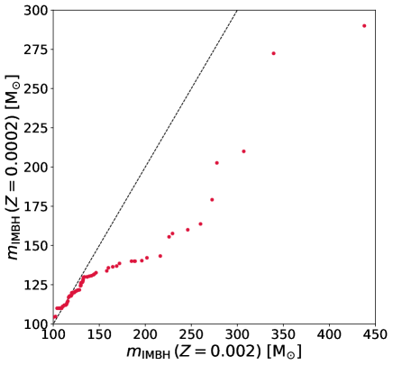
 و
و . يبين المحور
. يبين المحور  القيم المقابلة لكميات مختارة من عينة
القيم المقابلة لكميات مختارة من عينة  ، في حين تمثل قيم المحور
، في حين تمثل قيم المحور  الكميات نفسها من أجل
الكميات نفسها من أجل  . إذا كانت كتل IMBH مستخرجة من التوزيع نفسه، فإن الانحرافات عن الخط القطري الأسود المتقطع 1:1 ستكون ناجمة عن التقلبات العشوائية وحدها.
. إذا كانت كتل IMBH مستخرجة من التوزيع نفسه، فإن الانحرافات عن الخط القطري الأسود المتقطع 1:1 ستكون ناجمة عن التقلبات العشوائية وحدها.